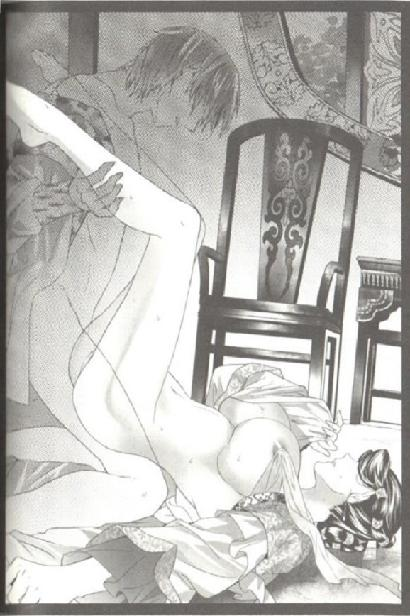
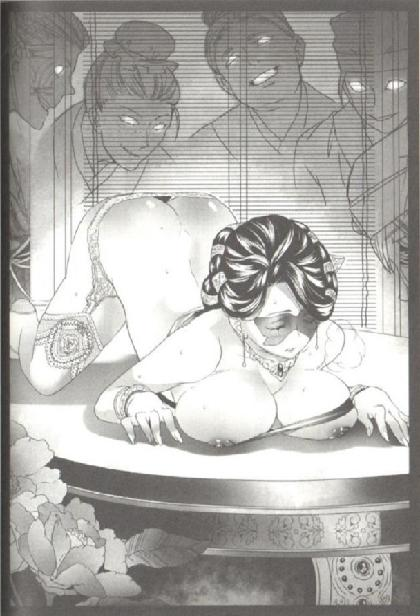

第37集·江州大捷
临安篇（6/10）
出版日期：2012-08-02
【本集内容简介】
宋军大败，自江州撤兵还被星月湖抢走辎重。主战的贾师宪眼看将要失势倒台，因筹办钱庄而遭人归于“贾党”的程宗扬亦是风雨飘摇。
秦桧借着认识“嫩草”王氏的机会提出依靠“王党”王宰相之路，程宗扬却深深了解到，在宋国唯有不变的权势才是安身立命之基，他真正该依附的是皇宫大殿上的宋主！
庆祝星月湖大胜的晚宴之后，程宗扬酒酣耳热、酣睡未醒之时，一道矫捷的身影闯入水榭，意欲杀人夺物——自大孚灵鹫寺袈裟上誊来的文字！
※ ※ ※ ※ ※
封面人物：黄莺怜

插图：黄莺怜（1）

插图：黄莺怜（2）
夜黑如墨，一道闪电从天而降，耀眼的白光撕裂天空，映出大雨中一个孤独的人影。
刘宜孙握紧腰刀，黄豆大的雨点砸在铁甲上，溅出一团细蒙蒙的水雾。狂风夹着暴雨卷过平原，犹如万马奔腾，更增添了夜雨的威势。但刘宜孙知道，这会儿不是深夜，短短半个时辰之前，这里还是红日当空的白昼。接着狂风四起，乌云蔽日，几乎一瞬间就完成了昼夜的转换。
似乎整个春天的雨水都集中在这短短的时间和空间里，泼水般浇在身上。刘宜孙没有动，在他身后，还有一个军的手下。他们每个人都在徒劳地等待，等待撤退的命令，或者敌寇的出现。
“春雨贵如油啊。”张亢道。他连甲都没挂，只披了件蓑衣，戴了顶斗笠，神态轻松自若。
刘宜孙手掌略微松开一些，勉强笑道：“你倒是轻松，还惦记着春耕。”
张亢扶了扶斗笠，“都已经撤军了，为什么不轻松？”
刘宜孙胸口起伏片刻，咬牙道：“我们是断后的！我手里说是一个军、五个指挥的兵力，实员只有六成，不足一千五百人！这还是龙卫军左厢最完整的一个军！城中的贼寇有多少？单是星月湖大营的余孽就不下一千五！虎翼军撤了，静塞军撤了，龙卫军也撤了！十几万人马没有一个人愿意在这鬼地方再多呆一天！可你却偏偏在夏帅面前抢着断后！张兄，真不用抢！断后的事没有一个会和你争的。”
面对刘宜孙的怒火，张亢神色淡然，摸着脸颊道：“断后的军功莫非将军不想要吗？”
“不想！”刘宜孙指着身后空荡荡的金明寨大营，压抑着怒火道：“我手下的儿郎也没有一个想要的！我们只想活着回去！只要和捧日军一起早走一天，我们也不用被这场大雨困在这里！”
“捧日右厢军？他们还带着辎重呢，”张亢叹了口气，“我可没那个力气推着大车去爬烈山。”
“性命呢？”刘宜孙压低声音道：“难道你觉得自己能挡住敌寇的进攻？他们只要一个冲锋就能把我们打垮！有寨墙也挡不住！”
张亢放下手，失望地说道：“原来将军也是怕死之人。”
“我不怕死！”刘宜孙被激怒了，咆哮道：“我只是不想白白送死！我有手下一千多儿郎要照顾！我还要报仇！”
“如此我们才要断后！”一道闪电掠过，映出张亢眼中锋锐的光芒，“带着辎重你能跑得掉吗？抛下辎重私自逃亡，你不怕斩首吗？”
张亢指着暴雨中的江州城，“你我都知道我们这支残军不堪一击，他们不知道吗？击溃我们这支残军对他们有什么好处？难道他们需要斩首的军功？将军错矣！他们要的只有一样：辎重和物资！”
“最危险的不是我们，而是带着辎重提前撤退的捧日右厢军！看到这场暴雨了吗？这就是他们出击的信号。此刻还是午时，却天黑如墨，哪里有这般遮天蔽日的暴雨？江州周围都是平原，如今是春季，泥土解冻，他们再施术下这场雨，道路泥泞得连马都过不去！”
“如果这场雨早下一天，我张亢立刻逃之夭夭——你不想白白送死，难道我想死？这场雨如今才下，说明贼寇已经绕过我们，追赶上了带着辎重的捧日右厢军！”
刘宜孙惊呆一样看着他。
张亢道：“所有带不走的器械都留在营中，为了避免惊动贼寇，军令要我们撤退时一把火烧掉。现在雨下这么大，烧什么都来不及了。这伙贼寇算得真是周密，一场雨至少留下了大半辎重，还困住了周围数十里的所有军队。逃，逃不得；救，救不得。好算计！”
“贼寇已经绕过我们？”刘宜孙有些不相信地说：“可是这么大的雨……”
“他们难道不会先赶到地方再降雨？况且他们有什么雨中行军的法子也未可知。”张亢道：“前有坚城，后有贼寇，我们只剩下一条路了。”
前后都有强敌，再加上这场突如其来的暴雨，别说无路可走，便是有路，军士们离开营房，只怕走不了数里就会失散大半。刘宜孙道：“哪里还有路？”
“大江。”张亢道：“营里现在别的没有，就是木料有的是。我已经让人扎了五十条木排，幸好缺员多，有这些木排已经绰绰有余了。”
刘宜孙吓了一跳，“你要过江？那边可是宁州！”
“过江是找死。”张亢道：“我们顺江而下。”
刘宜孙已经说不出话来，撤军只有一条路，那就是向东，翻越烈山。顺江而下，只会离宋国越来越远。
“往下游一日的水路便是昭南。”张亢道：“这一路顺水行舟，两日可达昆吾，自昆吾上岸，向东三日到达荆溪，折而向北，再有三天我们就能到筠州。”
“筠州！”刘宜孙当然知道这座位于宋国最西部的州城。
张亢点了点头，“别忘了，我往昭南去过。”
一个多月前，张亢带着一个都的军士潜入昭南劫掠，究竟抢到手多少钱财，连刘宜孙都不知道，但他留给自己的一份，已经足够丰厚。
刘宜孙怔了半晌，然后道：“路上一共需要九天时间，其中八天都在昭南境内。我们可不是一两个人，而是一整支军队，何况你又去过——难道还能在昭南招摇过市？”
“所以要换装。不能用大宋的旗号。”
“你抢了昭南的军库？”一股狂风卷过，刘宜孙猛地灌了一口的雨，咳了几声才道：“我们就是扮作昭南军，便能瞒过昭南人吗？”
张亢看了他一眼，吐出两个字：“汉军。”
在刘宜孙震惊的目光下，张亢用刀鞘在雨地上划了一道：“众人都知道大江下游是昭南，却常常忘了大江入海处的合浦郡，是汉国的土地。”他在代表大江的线条末端点了点，“郡中常驻数千汉军。”
刘宜孙想了起来，当年汉武帝称霸六朝，为表示自己一统天下，在东南西北四地分别设郡驻军，汉军兵甲所至，最南端的便是合浦郡。
“我在昭南遇上了汉军。”张亢低声道：“合浦郡守赵佗久居南方，听说我宋军讨伐天子钦定的逆犯岳鹏举余孽，有意出兵争一份功劳，好返回京师洛阳。如今汉使多半已经到了临安，只要陛下点头，合浦郡的汉军用不了几日便会逆流北上，与我军汇合于江州城下。”
刘宜孙听得心惊肉跳。武臣以私人身份结交外将倒也罢了，私下合谋军事，无论哪一朝都是重罪，轻则杀头，重则灭族，连夏用和都不敢做的事，张亢居然做了。他知道张亢胆子很大，却没想到他竟然如此胆大包天。
张亢抖了抖蓑衣，“如今陛下已经下诏撤军，赵郡守只有再等待其他立功的机会。但按照当年的盟约，汉军有六朝通行的特权，只要换上汉军的衣甲旗号，咱们就能平平安安返回筠州。”张亢肉痛地咧了咧嘴，“一千五百套，全是汉军换下来的旧军服也够我出血的了。”
刘宜孙最后努力道：“我们是断后，如果擅离职守，即使能回到筠州，也是死罪。”
张亢扭头望着身后的雨幕，然后道：“胜负已分，今晚这一战，必然是我大宋数十年来最大的一次溃败，如果按军法论处，该斩首者成百上千。我们若能从群寇间全师而还，朝廷高兴还来不及。”
张亢没有再说下去，两人凝视良久，刘宜孙猛地摘下头盔，用力抖去上面的雨水，咬牙道：“雨快停了。这会儿再不走，便不用走了！”
※ ※ ※ ※ ※
烈山以西的平原上，一长列看不到首尾的军队正在暴雨中艰难地跋涉着。乌云初起时点燃的火把此时早已被大雨浇灭，军士们只能披着湿漉漉的衣甲在黑暗中摸索前行，不时划破天际的闪电映出他们被疲惫和恐惧舔干活力的面孔。
春雨还带着冬季的寒意，进了水的袖口不多时就将手腕冻得麻木。石元孙握着马鞭，心底的寒意却比这场突如其来的暴雨更甚。
金明寨距离烈山一百余里，按标准是两日的路程，但石元孙为了尽早与中军汇合，昨晚只让军士们休息了两个时辰。捧日右厢军带着大量辎重，本来就行走不易，但军士们都恨不能早些离开江州，人人争先，谁知会遇上这场暴雨。
被无数人马践踏过的道路像泥潭一样泥泞不堪，一脚踏下，泥淖几乎没过小腿。泥中丢满了各种各样的战靴，但没有一名军士停下来捡一双。因为好不容易换上的鞋子，走不了几步就会被吸盘一样的泥路粘掉，如果没有被粘掉，那就意味着你要带着一双沾满泥浆的鞋子前进，每一只都仿佛有数百斤重。
推着大车的军士早已经疲不能兴，连喊号子的力气都没有，只能埋着头，拼命推动比平常重上数十倍的大车。忽然车轮一滑，一辆大车陷进一个尺许深的泥坑中，载满兵甲的车辆倾斜过来，挡住了前进的队伍。
两名骑兵拖泥带水地打马奔来，摇着湿透的令旗喝道：“将军有令！今日必须赶至烈山营地！沿途不得歇息！妄自停留者！杖！迟疑不进者！斩！阻塞道路者！斩！”
泥水溅在身上，军士们甚至没有露出愤怒的目光，只木然卸下车上的衣甲，扔到泥浆中，将大车掀翻到一边。
自从接到撤军的诏令后，宋军就因为如何撤军爆发过数次争吵。最后带伤参加会议的翁应龙在夏用和的支持下，力排众议，决定先撤走在江州城下几近打残的虎翼、归圣、静塞诸军。
对于一支士气低落的疲兵来说，撤退的风险甚至还高于两军交战。为了防止被城中的贼寇发觉追击，宋军的撤退措施极为隐秘，大量物资都留到了最后，由人员相对完整的捧日右厢军负责押运。断后的任务，则交给了主动站出来的刘宜孙军。
张亢的猜测并不完全准确，事实上，断后的除了他们的龙卫左厢第十军，还有一支军队：秦翰的选锋营。
选锋营连日苦战，损失并不比其他友军小，为了保证这支全骑军的机动性，夏用和几乎调集了军中所有还能够抽调的马匹，以至于押运辎重的捧日右厢军连拉车的挽马都凑不够。
宋军在撤退中溃败已经不是第一次，除了毛遂自荐的刘宜孙，唯一能与贼寇正面对敌的选锋营，夏用和还不惜人力物力，在烈山脚下筑了一座小城，留下捧日左厢军的王信和种世衡两军负责接应。如果贼寇真敢弃城而出，远赴百里截杀捧日军，宋军一个反扑，在平原和烈山交界处与敌寇形成决战也不是不可能。
然而一场暴雨打乱了宋军所有的部署。本来预计下午就能赶到烈山的捧日右厢军，因为这场意料之外的暴雨，行进速度陡然降至谷底，此刻已经过了午时，距离目的地仍遥遥无期。
选锋营即使再精锐，也不可能在这种暴风雨天气及时驰援。同样，王信与种世衡两军也不可能冒雨出城，去接应天知道在哪儿的捧日右厢军。
眼下最好的选择应该是就地扎营，但石元孙宁愿冒着军队哗变的危险，也不敢稍作停留——如果敌寇在此时出现，根本用不着交战，只要呐喊两声，整个捧日右厢军就会立刻溃散。
神宵宗！石元孙心里恨恨骂了一声。
自从王哲一剑叩石，逼迫宋国停止追究武穆王余党，宋国朝廷明面上没说什么，暗中却着力扶植神霄宗，仅仙师的称号就先后封了三位。结果江州城下连番较量，神霄宗派来的法师张如晦被贼寇的术者完全压制，没有占到半点便宜。数日前法阵被破，神霄宗更是一蹶不振。等接到撤军的诏书，神霄宗只向翁应龙通禀一声，便即撤离。若有神霄宗的法师在，自己也不至于这么狼狈——可恨这些法师一个个成事不足，败事有余！钱财耗费了许多，却未见半点功劳。
石元孙用力抽了坐骑一鞭，马蹄带着厚厚的泥浆，在泥泞中艰难前行。虽然明知道城中的贼寇同样损失惨重，不可能有余力出城野战，但自从踏上撤军的路程，石元孙就隐隐不安，毕竟那是星月湖大营的悍匪……
这场突如其来的暴雨打乱了石元孙的行军计划，焦急之余，他心下却暗暗有些庆幸。雨下到这步田地，整个江州平原都成了烂泥塘，那些贼寇再凶悍，终究也是活人，不可能生出翅膀飞过来。军士们淋了这场雨，少不得要病倒一半。但只要能赶到烈山脚下，这条性命便算是保住了。
石元孙左思右想，脑中没有片刻安宁。突然，身后传来一声号角。
这种充满萧杀意味的号角声，这几个月来宋军上下已经听过无数次，此时听闻，几乎所有人都回头望去，瞳孔恐惧地收紧，连石元孙也不例外。
那号声来得极快，初起还在里许之外，不过一个呼吸，就逼近到百余步的距离，仿佛在暴雨中御风而行。
石元孙用变调的声音大喝道：“结阵！”
为了行路方便，军士们都把军械放到辎重车上，这时乱纷纷过去捡拾，一时间哪里还能展开阵形？
慌乱中，一个剽悍的身影撕开雨幕，直闯过来。那人精赤上身，淡金色的皮肤犹如一尊镏金铜佛，口中横咬着一柄长刀，正是雷霆刀臧修。队尾一名掉队的宋军躲闪不及，被臧修一撞，立刻横飞而起。
臧修不理不顾，身体微微前倾，风驰电掣般朝宋军大队袭来，连马蹄都能陷住的泥淖似乎没有对他造成半点滞碍。
石元孙勒住缰绳的手掌都在颤抖，这时他才看清那人脚上踏着两块古怪的板子，板身一掌宽，两端上翘，仿佛两条小舟。他手中持着一对细竹竿，用来操控前进，虽然满地泥泞，他却像是踏着两条小船，来去如风。
臧修把细杆收到背后，一把摘下雷霆战刀。霹雳般的雷霆震响中，他宛如一柄战斧，狠狠劈进宋军还未成形的战阵之间。
越来越多的身影从雨中出现，比起倚仗金钟罩护体的臧修，他们身上多了一件防雨的斗篷，其他装备一模一样，都配备有在泥上滑行的木板和竹杖。
石元孙惊恐地发现，即使在这种长途奔袭的追击战中，这些贼寇依然保持着完整的队形和犀利的战术。他们没有利用可以滑行的木板，靠速度和灵活性拉开距离与己方周旋，而是毫不犹豫地选择了破阵对攻。
以臧修为首，星月湖军士一个接一个闯进他破开的缝隙中，无论是宋军奋力挥出的刀枪，还是军士们仓促抛出的拒马，都无法阻挡他们的锋芒。那些凶悍的匪寇就像一柄快刀，在宋军队伍间越进越深。
石元孙激灵灵打了个冷战，等他清醒过来，立刻一扯斗篷掩住头脸，伏在鞍上打马狂奔。
撤退途中遭遇暴雨，宋军士气已跌至谷底，眼见主将被雨水淋湿的大纛晃了晃，然后轰然倒下，宋军呆了片刻，随即溃散。
没有人再去理会车上的辎重，载满物资的大车被抛到路边，宋国朝廷费尽力气运来的粮草扔到泥中，耗费重金打造的兵器战甲委弃满地，捧日军镶着华丽豹尾的大纛倒在泥浆中，被慌不择路的军士践踏而过。
宋军的队伍就像一条长长的蜈蚣刹那间解体，每一个部分都争先恐后地朝四面八方逃散。军士们抛下辎重，扔掉刀枪，脱下衣甲，争相逃亡。一边跑一边发出惨叫，仿佛数月来压抑的恐惧都在这一刻迸发出来。
吴三桂、吴战威、易彪踏着滑板，肩并肩地滑过泥地。他们三个在城中练了几日，虽然不及星月湖大营的军士娴熟，好歹功底扎实，一路过来只摔了几跤，比起在泥泞中连滚带爬的宋军可强得太多了。
“老桂运气够好，”吴战威道：“一回来就赶上打仗！”
吴三桂悻悻道：“可惜我去了趟建康，硬仗都让你们打完了。”
易彪回头看了一眼，“能跟上来的还不到三成，这些家伙平常看着也人五人六的，拉出来一练，可比星月湖的爷儿们差了一大截。”
三人奉命组建一团的直属营，他们从城中挑选了一百多名佣兵，又招募了一些精壮，好不容易凑够定额的三百人。按照程宗扬多打硬仗的命令，这支新军每每冲在最前，经过漫长的围城战，已经差不多淘汰了一遍。用一般军队的标准衡量，这支血战出来杀气十足的新军已经是不折不扣的精锐，但比起星月湖大营的强悍还是远远不及。
吴三桂看着星月湖军士在前冲杀的雄姿，不禁兴起，一把摘下长矛，“我去冲杀一番！亮亮咱们直属营的招牌！”
吴战威虽然也看得手痒，却惦记着孟非卿的吩咐，摇头道：“不成！孟上校吩咐过，这一仗干的是抢钱抢粮的勾当，把宋军赶走就是了，兄弟们还要留着命去水香楼热闹呢。”
吴三桂笑道：“大哥说的是。这会儿跟上来的有百十号人了，这一仗怎么打，我听大哥的。”
吴战威嘿嘿一乐，“得了吧，咱们仨里面，打仗就数你和彪子在行。你们俩商量，我听着。”
“成！”吴三桂也不推让，指着宋军道：“宋军三千余人，队伍拉出近三里地，根本就不是打仗的架势。眼下星月湖的爷儿们一上，主将就逃了，剩下的宋军肯定有多快跑多快。让我说呢，咱们这一百多人从中间插过去，把宋军一截两段。老臧他们在后，咱们在中间，两头一拦，咱们一团就直接把宋军的后半截包了饺子。孟上校的二团比咱们走得更早，这会儿多半在前面守着，前半截就归他们。”
易彪道：“还有侯中校的三团，他们在两翼警戒。按匡仙长当初说的，这场雨最多下一个半时辰，一会儿就停，如果他们被选锋营缠住就麻烦了。”
“雨停了，地还没干，只要手脚麻利点儿，选锋营连咱们的泥都吃不上。”说着吴三桂用手肘拱了拱易彪，“彪子，你那个相好呢？”
易彪脸上一红，“别乱说——人家是个寡妇……”
吴战威道：“寡妇怎么了？只要能生会养就成！我说彪子，这一仗打完，咱们跟程头儿说一声，把你和鹂儿的喜事办了，然后再纳个妾！”
易彪低下头，半晌道：“我要去白夷看看我哥。”
吴战威和吴三桂一同拍了拍他的肩，安慰道：“知道你有家有口，虎哥肯定也高兴。行了！人也到得差不多了，干活儿！”
三人略停片刻，整顿了部属，然后朝宋军溃散的队伍正中冲杀过去。
易彪一边滑行，一边拿起颈中的号角，用力吹响。他的号角声与星月湖大营的肃杀又有不同，号声苍凉悲壮。不多时，后方传来一声相同的号角声，远远应和。易彪等人放下心来，各自拿出兵刃，吼道：“杀！”
几名宋军拉住一辆大车的驮马，试图割断缰绳，借助马力逃跑。忽然车身一沉，一条大汉跃到车上，他光着膀子，颈背生着黄黑相间的斑纹，就像一头直立的猛虎，双目凶光毕露。
那大汉狰狞地张开大口，发出一声虎啸般的狂吼。四匹健马顿时四蹄发软，卧倒在地。离他最近的一名军士被他猛兽般的气势所震慑，两眼翻白，生生吓晕了过去。其他几名军士被骇得倒退几步，接着发了声喊，转身不要命地四散逃开。
武二郎双手叉腰，一脚跺着满车的辎重，吼道：“敢抢二爷的东西！孙子！活腻了吧！”
月霜踩着滑板风一样从他车边掠过，黑色的斗篷长长披在肩后。秋少君一手按着粘在脸上的胡须，两只滑板早不知甩到哪儿去了，他这会儿使出太乙真宗的轻功，速度比起月霜的滑板竟然也慢不了多少。
武二立在车上雄视四方，威风十足，可惜他虎威过盛，宋军不是吓晕过去，就是四散逃命，连半个凑趣的都没有，不免有些无味。眼见秋少君过来，他眼一瞪，“臭小子，傻乐什么呢？”
秋少君翻了个白眼，按着胡子道：“让你天天跟在别人马屁股后面吃灰，突然有一天不用吃了，难道你不乐吗？”
“我呸！”武二郎啐了一口，“臭小子，男人的脸都被你丢尽了！”
“你个非人类的凶徒！人渣！暴力狂！”秋少君还了句嘴，然后叫道：“月姑娘！等等我啊！”
孟非卿曾对程宗扬说过，世上没有不败的武将，一名好的将领，不仅仅要能打胜仗，更重要的是会打败仗。只有善打败仗，才能最大限度地保存实力。有些将领号称百战百胜，一次战败就永世不得翻身，有些将领却是屡败屡战，无论败多少次，都能东山再起。
眼前这一战，将宋军不善打败仗的弱点暴露无遗，主将当先逃窜，余下的军士再没有作战的勇气。捧日右厢军早已残破的指挥体系根本无法组织起一次有效的抵抗，从武将到士卒，每个人都在争先恐后地逃命。
※ ※ ※ ※ ※
战事之初，星月湖大营集中了营内所有法师，占据天时，同时投入了三分之二的兵力，只放了三个营留守江州。程宗扬所属的一团，由臧修和吴战威分别带领一营和直属营参战。二团由郭盛和月霜各带一个营，侯玄则亲自带领三团的两个营在战场之外戒备。
相比于星月湖大营布置的周密，宋军在暴雨中丧失了所有的斗志。双方略一接触，宋军便毫不意外地全军雪崩，甚至连一次像样的反击都没有组织起来。随着郭盛带领的二团直属营和一支黑衣军同时出现在宋军前方，战局已经无法扭转。唯一的问题就是这千余名贼寇如何把数百辆装满辎重的车辆拖走。
就在这时，暴雨中传来一阵低沉的咆哮声，逃奔的宋军惊恐地发现，一排堡垒般的黑影出现在战场上，而且还在以不逊于战马的速度向前移动。
远古巨兽般的猛犸象陆续抵达战场，它们弯曲的长牙弯刀般向前伸出，长鼻昂起，巨大的头颅宛如岩石。它们头颅后方与背部相接处有一个明显的凹陷，来自荆溪的女驭手坐在上面，头顶撑着亭子般的纸伞，宛如持戟的女武神。
暴雨止歇，阳光穿透乌云，洒在战场上。溃散的宋军已经无影无踪，只留下遍地的甲胄、兵器、鞋子、军旗，还有数百辆盛满辎重的大车。击溃宋军容易，运走这些物资却成了麻烦——并不是运力不足，有荆溪人的猛犸战队在，打扫战场的任务变得轻松而迅速——而是武二爷有话要说。
“这是我的！”武二郎一样一样指着，“我的！我的！我的……”然后他大手一挥，“这些全都运到二爷房里去！”
吴战威咧了咧嘴，武二这厮也真够不要脸的，一挥手就要了一半的战利品。
易彪没有在意二爷抢东西的可憎嘴脸，他擦净脸上的泥点，然后摘下颈中的号角，双手捧起，朗声道：“多谢荆溪的朋友援手。”
跨在猛犸背上的荆溪女子微微一笑，拍了拍生着长毛的猛犸背，猛犸扬起长鼻，用人手一样灵巧的动作夹住号角，递到主人手中。
吴战威与吴三桂在后面挤眉弄眼，吴战威小声道：“彪子行啊，在建康有鹂儿，在江州又勾搭上一个，还没办事呢，妻妾都有了。”
“要不你也纳一个？”吴三桂道：“我看嫂子也是个心宽的人，想来不会呷这种飞醋。”
“打住！这话可千万别让翠烟听见！”
吴三桂揶揄道：“看不出吴大哥还是个怕老婆的。”
“胡说！她有了身子，我是让着她！”吴战威赶紧转开话题，“咦？那边那位兄弟，看着有点面熟啊，侯爷的人？”
吴三桂打眼一看，叫道：“老石！”说着过去搂住那名黑衣人首领的肩，朝他胸口擂了一拳，熟络地聊了起来。
月霜没有理睬武二郎划的圈子，冷着脸道：“所有缴获一律入库。运走！”
“谁敢动！”武二郎叫道：“亲兄弟还明算账呢！二爷占的有股份！这一半都是我的！”
“无赖！”秋少君怒喝一声，然后一脸无辜地指指月霜，“我是替月姑娘说的。”
“臭小子！再说声试试！”武二郎吼道：“瞧二爷不打扁你的嘴！”
“他说的没错！”月霜气得玉脸发白，厉声道：“你就是个无赖！”
“嘿！你这丫头——”
武二还没说完，就被人打断了，刚才与吴三桂寒暄的那名黑衣人首领过来施了一礼，用公事公办的口气道：“我家侯爷说了，这次近卫队出兵，我们侯爷只要四成。待我们清点之后，剩下六成归你们所有。”
萧遥逸也一同跟来，其他人身上满是泥污，他却是华服簇新，别说泥点，身上连一个雨点都没有——全靠了那张俊脸，小侯爷是坐在猛犸背上来的。
这会儿听到双方的叫嚷，萧遥逸头一个按捺不住，他一脚踩住车轴，袖子挽到肘上，巴掌拍得大车“梆梆”响，叫道：“欺负人是不是！这个要一半，那个要四成，给我们留一成？”
“六成。”黑衣人首领道：“我们侯爷只要四成，剩下六成你们怎么分，不关我的事。便是不给二爷留一文，也是你们的本事。”
武二郎吼道：“谁敢拿二爷一文钱试试！”
刚才还并肩作战的星月湖大营、武二郎和鸩羽殇侯的近卫队三方吵成一片，让吴战威等人看得目瞪口呆。按说他们也是星月湖大营的人，应该站在萧少校一边，可是对面站着要钱不要脸的无赖英雄武二爷，还有随随便便就要人命的老毒物的近卫队，吴战威和易彪掂掂自己的份量，都觉得眼下还不到仗义的时候。
武二郎横眉竖眼，张开大手把生满胸毛的胸脯拍得山响，“你们满世界打听打听！二爷是不是好欺负的！”
萧遥逸吼道：“我们星月湖大营自打跟着岳帅，只有占别人便宜的份！谁敢占老子的便宜试试！张嘴就是四成、一半！还真敢开牙！”
黑衣人首领抱着肩道：“萧刺史，分成的事暂且不说。前些日子有人乱改我们侯爷的旗号，这笔账是不是该算算了？”
萧遥逸拍着大车道：“武二！是不是你干的！”
“嘿！二爷不发威，让你们当病猫了！这么大的屎盆子都往二爷头上扣！”
黑衣人首领抬手将一柄单刀剁到车上，恶狠狠道：“冤有头！债有主！是爷儿们的就别缩头当乌龟！”
萧遥逸吼道：“有理说理！你凭什么骂二爷是乌龟！”
黑衣人首领张口欲骂，被吴三桂拉住，“老石！老石！有话好好说！”
众人正吵得不可开交，一个声音传来，虽然不高，却把众人的吵闹都压了下去。
“怎么了——”
众人分开一条通道，侯玄跨在战马上，像刚睡醒一样眯着眼，懒洋洋地骑过来。
萧遥逸一怔，把吵嚷的事扔到一边，先问道：“选锋营呢？”
“没见着。”侯玄摘下军帽，一手扇着风，去着潮气，带着一丝无奈的表情道：“你猜我遇到谁了？”
萧遥逸皱起眉，“谢幼度？这小子有胆子赶过来打落水狗？不怕把王老头气死？”
“北府兵没动静，”侯玄摸了摸脖子，“我是见着萧侯爷了。”
萧遥逸张大嘴巴，“我爹？”
侯玄叹了口气，“咱们兄弟还是嫩啊。萧伯父早两天就带人马过了江，趁着大雨，换了军服，打出捧日军的旗号，兵不血刃就把烈山营地抢了个净光——真是净光，那些宁州兵把锅都抢走了。”
萧遥逸怔了半晌，“我爹也穷了啊？”
“靠两州之地打到现在，不穷才见鬼。”侯玄道：“咱们也快揭不开锅了，幸好有这批辎重——”
“二爷的东西！谁敢动！”
黑衣人首领道：“侯爷千里来援，只取四成已经很仁义了。”
侯玄“啪”地把帽子扣上，正要开口，月霜却冷冰冰说道：“石敬瑭！殇侯的近卫队说好每次出击按人拿钱，按着雇佣兵的例子，既然拿过钱，战利品的分配权就该归我们所有。”
不等石敬瑭辩解，月霜便接着道：“只要把这批辎重运回江州，近卫队一律拿双倍的俸，另加一成的战利品折现。”
石敬瑭衡量了一下，这样虽然少了点，可辎重拿到手也要折现，总不能让侯爷背着去赶路。这些辎重一大半都是军械，在江州除了星月湖大营，也没有第二家敢收，算下来也差不了太多。盘算一遍后，石敬瑭哼了一声，算是默认。
对殇侯的近卫队作出让步，月霜转身面对武二郎，毫不客气地说道：“这一仗不是盘江程氏那个破公司的生意，你的股份向姓程的要去！”
武二郎抹了抹胸毛上的雨水，有意无意地亮出手臂上夸张的肌肉，一脸蛮横地说道：“二爷出了这么大力气，你说没有就没有！”
“我们星月湖大营、殇侯的近卫队，还有荆溪的姐妹们，谁没有出力？凭什么你开口就要一半？”
侯玄翻身下马，往月霜身后一站，粗声大气地说道：“大小姐说的在理！”
萧遥逸也凑过来，笑嘻嘻道：“没错，就是这个理。”
武二郎狠啐一口，比出两根手指，口沫横飞地说道：“三成！你们一份，殇老头一份，二爷一份！不多吧！”
身后传来一个冷幽幽的声音：“多。”
斯明信坐在大车的把手上，用他的翼钩剔着指甲，头也不抬地说道。
另一侧，卢景的白眼都快翻成瞎子了，一副目中无人的模样瞪着武二郎，煞有介事地说道：“让我说，一成都多。”
武二郎吼道：“二爷占的有股份！”
“按股算？好啊。”月霜抬手一指，“参加战斗的，每人算一股，我们星月湖大营一千八百股比你的一股怎么样？”
崔茂一手拎着他的混元锤，一手拿着酒壶灌了一口，“有道理。”
除了坐镇江州的孟非卿和王韬，星月湖大营天驷、云骖、幻驹、青骓、玄骐五骏齐聚，后面的臧修、郭盛、鲁子印等人也围过来，抱着肩立在月霜身后，再加上外围的星月湖军士，没有一千也有八百。
这些军士都是身经百战的壮汉，从头数到尾都没有一个善茬，这会儿一个个脸色不善、目露凶光，眼见着只要月霜一声令下，就是石头也敢挤出油来。
武二郎终于急了眼，大吼道：“仗着人多欺负人啊！这些东西谁都别动！我找孟老大评理去！”
说罢武二郎迈开大步，顺手还卷了一副上好的精甲，夹在腋下，头也不回地朝江州奔去。
望着武二郎的背影，月霜第一个忍不住笑出来，接着众人放声大笑。
武二爷脾气虽然死臭，为人又凶又横又无赖，至少有一点好处：识时务，起码的眼力价还是有的——这一点就比秋小子强。
此役过后，烈山以西再没有成建制的宋军，压在众人心头的阴霾一扫而空，每个人心情都轻松起来。
以一城之力，让大宋倾国之兵折戟而归，无论在战场内外，星月湖大营都以铁一般的战绩证明了自己的实力。从今往后，星月湖大营的战旗终于能堂堂正正地在阳光下飘扬。
月霜指着大车道：“这一车辎重算是武二的。他虽然是个臭无赖，这些天也出了不少力气。剩下的全部运回江州。”
侯玄双足一并，挺起胸膛向月霜敬了一礼，高声道：“是！”
斯明信、卢景、崔茂、萧遥逸也各自敬礼，齐声道：“是！”
月霜微微一愕，随即玉脸掠过一抹激动的红色，她沉着地向众人点了点头，然后道：“回师！”
来自星月湖大营的军士齐声应诺，众人一起动手，迅速将散乱的辎重车辆集中起来，分别系上驮带，挂在猛犸背上。
※ ※ ※ ※ ※
当荆溪人的猛犸战队将载满辎重的车辆拖回江州时，程宗扬正在为纸钞的事头痛。没有宋国朝廷的支持，小额纸钞的发行惨不忍睹，整整两天，程氏钱庄兑换纸钞的铺面连鬼影都没有一个。
“以纸易金，非是一日之功，家主也不必忧虑。”林清浦劝道。
程宗扬放下账簿，笑道：“清浦兄，你比我还小两岁吧，怎么一副老气横秋的样子，天生的少年老成啊。”
“君不密则失臣，臣不密则失身，机事不密则害成。”林清浦道：“敝宗所习多涉机密，清浦入门时，各位师长便屡屡教诲。”
程宗扬站起身，一边散步一边好奇地问道：“你们影月宗弟子有从军的，有从商的，而且都涉及各行机密，那不成了天下最大的情报组织？”
“若是如此，敝宗早被攻灭多次，哪里还能延续到现在？”林清浦道：“公子也许不知，上古之时，传习影月之术者远非我影月宗一支。但流传至今日者，唯有敝宗而已。”
程宗扬笑道：“难道你们有什么保命的秘诀？”
“无他，敝宗秘诀唯有八字：专于道术，不涉世务。”林清浦道：“我影月宗弟子一旦出师，便与宗门无关。无论生死荣辱，宗门都不闻不问。留于宗门传承道统的师长，则丝毫不涉及外务。”
“等等！”程宗扬急忙道：“你出师了吗？”
林清浦一笑，“在下赴筠州之前，刚正式辞别师门。”
程宗扬恍然道：“原来走南荒的时候你还是学徒啊。”
“若非灵飞镜与敝宗关系甚深，清浦也不会以弟子的身份受聘云氏。”林清浦道：“纵然有此禁令，六朝对敝宗疑忌尚存，诸国朝廷极少任用敝宗门人。”
“我说呢，这么方便的法子，宋国怎么不用来调兵传令呢？各国朝廷这么小心，未免有点因噎废食。”
“对诸国朝廷是防微杜渐，对我影月宗则是存续之机。”
程宗扬想了一会儿，“果然是用不得。如果六朝都用影月宗法师，一旦你们勾起手来，整个天下都成你们的囊中之物了。”
林清浦的笑容中半是骄傲半是无奈，“正是如此。”
程宗扬笑道：“听说今天金明池对外开放，反正没什么活儿可干，咱们叫上会之、冯大法还有师师姑娘，一起看热闹去！”
※ ※ ※ ※ ※
若论市面繁华，临安还在建康之上。御街两侧各色店铺鳞次栉比，满街都是熙熙攘攘的人流。比起同样商业气息十足的晴州，临安则更多了几分市民色彩，至少街旁各种各样的杂耍，就是晴州街头不多见的。
程宗扬本来想乘车前去，但一看街上浩浩荡荡的人流，立刻就打消了主意，老老实实地安步当车。
他穿了一身临安正时兴的宝蓝绸衣，打扮成一个半文半商的公子哥儿模样。秦桧、冯源和林清浦都是伴当打扮。后面两个膀大腰圆的兽蛮武士戴着斗笠，一行人热热闹闹地上了街。
李师师穿着一袭素白的衣衫，鬓侧簪了一朵海棠，虽然脂粉不施，却自然而然流露出一番风流韵致，引来不少艳羡的目光。
御街两旁摊铺杂陈，除了饮食浆饼、水陆百货，中间还有不少抛丸、吞火、走绳、顶球的艺人，让市面显得愈发热闹。
“听说临安百姓不分老幼，都会两手杂耍。”冯源兴致勃勃地说道。
来临安虽然有些日子了，但先是薛延山遇袭，后来又躲在翠微园搞手雷，冯源一直忙里忙外，还没有好好逛过临安的街市，这会儿看得眼花缭乱，只恨两只眼睛不够用。
林清浦也看得开心，边走边道：“学成文武艺，卖与帝王家。临安人怎么喜欢学杂耍呢？”
冯源大度地说道：“论法术你比我强点儿，论见识，你可就不如我了。学文三年一考，一次取中三百来人，算下来一百年才取中万把人，这还是整个宋国，临安一城就不下四十万户，都学文连西北风也没得喝。学武更不行了，自古穷文富武，习武吃的穿的喝的用的，一般人家哪里拿得起钱？算下来还是学杂耍最经济。有一门手艺，到哪儿都饿不死，遇上逢年过节，更是赚得盆满钵满，运气好些，几日时间就把一年的吃穿都挣下来了……”
冯源说得高兴，程宗扬却在一处摊位前停了下来。那摊位也不甚出奇，只放了只木盆，盆里养着几十条红、黄、黑、白不同颜色的金鱼。
程宗扬回头道：“这里有卖金鱼的，师师，给你买几条回去养吧。”
李师师抿嘴一笑，“你便是想买，人家也不肯卖——这是驯好的鱼舞。摊主却是卖糖的。”
“跳舞的鱼？”程宗扬来了兴趣，“跳一个看看！”
一看生意上门，摊主打起精神，拿着一支小木槌，一边发出富于韵律的吆喝声，一边在木盆边缘轻轻敲击。盆里的金鱼闻声而动，按照颜色分成不同队型。
随着木槌轻击，一群群小鱼或东或西，时分时聚，就像有人驱使一样灵巧自如。
程宗扬心里嘀咕：这些金鱼肚子里不会装磁石了吧？
正看得有趣，摊主忽然一声吆喝，几十条金鱼同时往水下一钻，只有鱼尾在水上拨动。
摊主往水里扔了把东西，等金鱼再次露出水面，程宗扬禁不住抚掌叫绝。那摊主扔的却是一把指甲盖大小的面具，上面画着各色人物，有文臣有武将，还有保镖、仕女、小贩……形形色色不一而足。那些金鱼钻出来，每条鱼都戴了只小面具，随着摊主的敲击，金鱼咬着面具下的环扣，摇头摆尾地在盆中鱼贯游动，就像勾栏里唱戏的演员一样。
以程宗扬见惯了现代娱乐业的目光，也不禁大开眼界，意犹未尽之余，主动掏腰包递了一个银铢过去——除了在外充场面的情况，私下里程宗扬一直坚持自己带钱付款。说一声“赏”，自然有随从拿钱打赏这种事虽然有派头，但程宗扬下意识地担心自己做得久了，会真的以老爷主子自居。
李师师这些天也见惯了他私底下的亲力亲为，不再像第一次看到他自己拿碗打饭，甚至还顺手给秦桧多盛一碗时那样惊讶。她接过摊主递来的糖，先给冯源、秦桧等人分过，才递给程宗扬。
程宗扬顺势在她白嫩的指上摸过，挨了一个白眼，才笑嘻嘻尝了一块，然后把剩下的递给金兀术和豹子头，笑道：“尝尝。”
一个银铢的糖块着实不少，金兀术和豹子头两人一分，一把倒进嘴里，吃炒豆一样嚼了干净，一边吃一边煞有介事地点着头。
离宫城愈近，人流越多，这一段路已经看不到两天前失火的惨状，被大火焚烧过的废墟都用帷幕遮住，临安府也在城外设了草棚，安置受灾的民众。秦桧当日抢购的砖瓦木料正以三倍甚至五倍的价格陆续出售，具体的账目还没有出来，但大赚一笔肯定是跑不了的。
似乎整个临安的市民都汇聚到通往金明池的御街，路旁临时搭建的铺位、杂耍摊子也越来越多。各色糕点、茶水、酒浆、零食的铺位琳琅满目，香气扑鼻。
单是饼点就有芝麻的胡饼，夹肉的群仙炙，甜品口味的糖油饼，外观精美的莲花肉饼……让程宗扬想起初到五原城时，自己把情趣内衣抵进当铺，才换了几个铜子，买了饼吃的惨状。
程宗扬挤进人群，拿出钱铢道：“一样来一个！”
“好咧！”摊主拿起纸袋，利落地装上饼点。
不一会儿，大伙儿便一人捧着一只糕饼边走边吃。李师师一小口一小口吃得秀气，秦桧慢悠悠吃得斯文，冯源一边吃一边喊热，林清浦是把饼撕碎，先看仔细才小心吃上一口。一堆十几个饼，程宗扬三口两口吃完算是快的，但最快的要属金兀术和豹子头。青面兽受了点内伤，在钱庄留守，没跟来凑热闹，这两个兽蛮大汉一张嘴就是两块饼，喉咙就跟石磨一样，下面连着无底洞，不管什么东西，塞进去就无影无踪。
“同州烂蒸羊羔！”
“仓山杏酪喽……”
“甘豆汤、鹿梨浆……”
“舞阳拨心面……”
“蒸子鹅、槐芽糁……”
“紫苏饮、荔枝膏水、木瓜汁……”
路边叫卖声此起彼伏，冯源跑过去买了几大杯雪泡水，大伙一人拿了一杯，站着看了会儿杂耍。
这一带多是调弄虫蚁的摊位，耍猴的，训练蚂蚁打仗的，狗熊翻跟头的，乌龟翻身的，最让程宗扬叫好的，是一头老驴跳的柘枝舞。
“干！”程宗扬佩服地说道：“这驴跳得比小侯爷还好看些！”
秦桧道：“公子此言差矣，若小侯爷身有四足，当可把此驴比将下去。”
“奸臣兄，要不你也跳一个？”
秦桧思忖着道：“歌舞非秦某所长，下棋倒可略试一二。”
程宗扬哈哈大笑，刚才他们还看了场棋耍，对弈双方是一只五彩鹦鹉和一只灰扑扑的大乌鸦。两只鸟各据一枝，叼着棋子在棋盘上你来我往，精彩纷呈。摊主还开了盘口，任由行人对弈，鹦鹉的赌注是一比五，乌鸦是一比十。林清浦看得兴起，花了二十铜铢下了一局，竟然还输给了乌鸦，让大伙好一通奚落。
一路走了差不多一个时辰，众人才赶到金明池。按照惯例，宋国每年三月十八日在金明池举行水赛，军民一同争夺锦标，同时纵都人游赏。前两日临安刚遭受大火，朝议本来准备取消今年的金明池争标，送呈御览时，宋主却钦定照常进行。虽然有粉饰太平的成分，但正投了临安人所好，即使刚遭火灾，仍然兴致不减。
金明池长近七里，湖岸遍植柳树，正值春日胜景，湖畔绿柳如烟，岸上士女如云。金明池正中，是一座富丽堂皇的水殿，由拱桥与岸上相连。往年宋主都在殿中观看水军操演和争标之赛，以示与民同乐。今年殿外也泊了御舟，但隔着数里的距离，看不清哪位才是宋主。
程宗扬等人在路上看杂耍耽误了，赶到金明池，水虎翼军的操演已经结束，但真正的重头戏刚刚开始。
远远能看到湖中插着一支竹竿，露出水面丈许，上面缠满七彩的锦带，竿顶还放着一只银碗，这便是用来争夺的锦标。
六条扎成龙舟式样的彩船如飞而至，船尾的鼓手奋力擂鼓，两排桨手击楫而行，浪花四溅中，能看到每支船上都搭着一座两丈高的木架，木架下悬着长链横板，却是设在船上的秋千。
彩船飞驰间，每条船上都有一名少年登上秋千，在船上高高荡起，做出种种惊险之极的动作。岸旁的游人高声欢呼，为桨手和荡秋千的少年加油助威。
一条红色的龙舟首先划进锦标周围设的圈子，水秋千上的少年也正好荡到最高点，他双足一蹬，张开双臂，大雁般从秋千上飞起，在空中抱住双膝，车轮般接连翻了几个跟头，然后笔直落入水中。
岸旁万头攒动，看着那少年钻出水面，游鱼般划向锦标，顿时发出雷鸣般的欢呼声。那少年手足并用，猿猴般攀到竿上，以一个魁星踢斗的花巧动作取下银碗，然后单足踏住竿顶，双手稳稳捧住。岸上再爆出一阵震耳欲聋的欢呼声，许多少女用丝巾打成结，朝湖中投去。
秦桧抚掌道：“其飞如鸟，其游如鱼，其攀如猿，虽是游戏，却三技并用，难怪金明池的争锦夺标能令万众瞩目。”
程宗扬目光不经意地往岸上一扫，却看到一个熟悉的身影。他若无其事地转过头，笑嘻嘻对李师师道：“海陆空全有，差一样就夺不了标呢。”说着顺势引开她的视线。
李师师一直看着湖中的夺标竞技，并未在意他的举动，浑然不知她母亲也在人群中，刚刚被人唤走，登上一辆马车。
湖上的表演还在继续，如果天气晴朗，会一直延续到深夜，但程宗扬已经没有半点心情。
金明池边最好的观景地点，搭了一座棚子，周围停着十几辆华丽的车马。能在这里占到位子的，都是临安城中有头脸的人家，一个个非富即贵。程宗扬一眼看去，毫不意外地看到了高衙内那小兔崽子。
程宗扬向秦桧使了个眼色，让他攀住李师师，然后挤进人群。
※ ※ ※ ※ ※
离棚子还有几丈远，一帮恶仆就拦住去路，嚷道：“这是各家衙内、公子订的位子，快走！快走！莫冲撞了各位少爷！”
吵嚷间，有人从棚子里伸出头来，一看是程宗扬，高衙内立即像皮球一样蹦过来，兴高采烈地叫道：“师父！”一面挺胸凸肚地教训道：“你们这些狗才！连本衙内的师父都不认得！”
高衙内呵斥了众仆，一边引程宗扬进棚。那些公子衙内见到程宗扬，有些不理不睬，有些面露不屑，有几个在他手下吃过亏的，更是横眉瞪眼，嚷道：“哪里来的篾片先生？快赶出去！”
高衙内恼道：“什么篾片先生？这是我师父！”
程宗扬也懒得理会那帮小崽子，趁高衙内向那群十三太保兄弟们辩解，他对高衙内身边的管家富安道：“刚才有个女的过来？”
富安嘿嘿一乐，“爷好眼力！”他往旁站了几步，压低声音，“威远镖局总镖头的夫人，销魂玉带阮女侠。”
程宗扬心头雪亮，这富安虽然一副下流狗腿的模样，但高俅经营多年，不可能一个心腹都没有。既然能被安排到岳鸟人送来的高衙内身边伺候，富安绝对是高俅心腹中的心腹。
两人对视一眼，彼此了然，心照不宣地走到棚后，避开众人的视线。
“怎么回事？”
富安也不隐瞒，“衙内自把阮女侠弄上手，便送给他的兄弟们玩耍。刚才在岸边见到，就派人把她唤来了。”
“车里是谁？”
“梁衙内。”
程宗扬心里像吃了个苍蝇般难受，“你去把她叫出来，就说家里有急事，让她立刻回去。”
打扰正在兴头上的梁公子，绝对不是个好差事，但富安没有半点犹豫，应了一声便去叫人。
这狗腿子还真有点本事，在车外说了两句，便见阮香琳从车中出来，匆匆忙忙离开。接着梁公子气急败坏地下了车，对着富安破口大骂。
富安双手叉在身前，赔着笑被他骂得狗血淋头，等他骂完，富安不知道又说了几句什么，顿时让梁公子转怒为喜。
等富安过来，程宗扬带着一丝不屑冷笑道：“姓梁的好大的架子。”
富安倒不放在心上，带着笑脸道：“都是主子，骂几句也算不得什么。”
阮香琳在天香水榭和那些衙内淫乱的荒唐一幕，程宗扬还记忆犹新。虽然阮香凝被剑玉姬封了记忆，无法知道她到底做了什么手脚，但阮香琳很可能是被自己亲妹算计，才举动失常。这么好一棵白菜，自己看在李师师面子上，硬是忍住没拱，怎么能让这些小兔崽子乱拱呢。
“姓梁的要找你麻烦，就来找我。”
“没事。”富安笑道：“梁公子刚买的几个奴婢正好送来，这种小事一转眼便忘了。”
高衙内教训了一帮兄弟，过来拉程宗扬入席。虽然宋国讲究师道尊严，但他们这些有权有势力的公子，看不上的就是那些连进士都考不上，整日在各府混吃混喝的教书先生，全靠着高衙内的面子，才没有给程宗扬难看。
程宗扬当然不会和他们计较，随意喝了几杯酒，远远看到一个怯生生的少女被带进来，送到梁公子的车上。
程宗扬心里暗自摇头，面上却若无其事，随口道：“今天人不怎么齐啊？”
高衙内道：“今天是热闹日子，有两个兄弟陪家里人脱不开身，还有个倒霉鬼是出了事。”
“出了什么事？”
高衙内笑嘻嘻道：“晚些徒儿再与师父说。来，师父尝尝这盏内府流香，正经的内府酿造！”
喝了几盏，程宗扬便要脱身，高衙内接连几天没有见着这位师父，有心跟他再学几手功夫，这会儿虽然不舍，也不敢强留，一边送出来，一边道：“师父，今晚徒儿要和兄弟们结拜，要不要来乐乐？”
程宗扬听得好笑，“你们十三太保还没结拜过？”
高衙内道：“新来的兄弟。”
程宗扬略一思忖，“行啊，就在翠微园吧。只要别进后院就行。”
高衙内喜出望外，“成！”
湖中夺得锦标的少年已经上岸，换了一身干衣，接受观众的欢呼。金明池中的表演还在继续，除了水秋千，还有竞渡、水舞、鼓乐……按惯例一直要持续到深夜，由宫中施放完五色烟火才算结束。
秦桧道：“临安水上乐事之盛，莫过于三月金明池夺标，八月钱塘江弄潮，每至此时，都中万人空巷。”
冯源跃跃欲试道：“不知道今年的烟火有多高。”
林清浦笑道：“让冯大法师给他们放一个见识见识。”
李师师有些奇怪他怎么突然离开，程宗扬笑着解释道：“碰见几个熟人，喝了几杯酒——”
话音未落，林清浦手指忽然动了一下。程宗扬停住话头，望向林清浦。
周围人头涌动，林清浦不好开口，只微微点了点头。
离开筠州之前，程宗扬从冯源手里勒索了一块龙睛玉，由林清浦注入法术，送到孟非卿手里。那块龙睛玉很小，放不了太复杂的法术，但用来召唤施法者本身是够了。这样江州一旦有紧急情况需要传讯，可以打碎龙睛玉，向林清浦发出讯息。
龙睛玉刚送过去不久，神霄宗在城外设立法阵，双方讯息隔绝，一直没有用上。如今林清浦突然生出感应，必定是江州有急讯。程宗扬不敢怠慢，急忙吩咐一声，金兀术和豹子头并肩从人群间硬挤出一条路来，护送众人离开金明池。
※ ※ ※ ※ ※
“江州大捷！宋军已撤过烈山。”
回到翠微园的静室，林清浦施出水镜术，便给了众人一个意料之中的喜讯。
程宗扬长出了一口气，心头一块大石头终于落地。
从去年十二月开始的江州之战，经过三个多月超过一百天的厮杀，最终以宋军的全面撤退而告终。虽然仅仅是一场波及范围不过一州，双方投入兵力十余万人的局部战争，江州之战带给六朝的巨大波澜才刚刚开始。
江州守军以战绩证明了星月湖大营的口号，从此之后，再没有人敢小看这一支失去龙头而被当成匪寇的军队。同时星月湖大营也用鲜血和牺牲证明了自己占据一州之地的资格。
按照最初的约定，星月湖大营将与萧侯各占一州，划江而治。名义上双方都属于晋国的臣僚，向建康缴纳应付的赋税，但除此之外，双方都拥有领域内所有的权利，江州成为星月湖大营事实上的领土。
江州之战刚刚结束，城中百废待举。萧遥逸作为江州刺史，要修表向晋国朝廷报告晋宋两军在边境共同剿匪大获全胜的战绩。王韬与崔茂负责清点此战抢获的物资和损失，斯明信与卢景分别往宁州和上游的北府兵大营通报战果。孟非卿则是坐纛的主心骨，下面的尉级军官有些负责整军，有些维持治安，有些负责与雇佣兵打交道，还要安排民众迁回、处置民夫、商贾等等事务，每个人都忙得不可开交。
只要江州之战尘埃落定，其他全是小事，程宗扬也没有把宝贵的时间用在祝贺上，与孟非卿互报了一声平安，便立刻问起另一件要命的大事，“长伯回来了吗？”
孟非卿知道他有事要说，叫来在外等候的吴三桂，便起身回避。
“属下接连几次潜入云府，都没能见到云小姐，反而和云大小姐照了次面，险些被她认出来。”吴三桂道：“属下不好再入云府，便去找了当日往云府诊治的大夫、稳婆，还有出入云府的小厮、杂役等人。”
程宗扬把所有人都打发出去，专注地听着吴三桂带来的消息。
“属下从各个渠道得到的消息，云小姐身体并无大碍，只是被云三爷送到别墅养护，下一步要等云六爷返回建康再作定夺。”吴三桂迟疑了一下，低声道：“云家对此事愤怒异常，恐怕小侯爷这次要有麻烦。”
程宗扬扯了扯嘴角，这种丢脸的乌龙事件，他才不会大嘴巴地满世界乱说，除了敖润和秦桧，其他人都还以为是萧遥逸干的好事。自己和小狐狸情同手足，大不了下次替他背个黑锅还他。
算算路程，云秀峰再有几日差不多就该回到建康，敖润一路追赶，到建康也就是前后脚的工夫。自己该说的都已经告诉了老敖，到时说出真相，要打要杀就由着云家几位爷了。
最好的结果，也许是自己把云如瑶娶来，可要娶她当正妻，别说把自己当成准妹夫看的八骏，单是死丫头那一关自己就没半点信心能过。如果当偏房，就算云老哥同意，云六爷能同意吗？
“黑魔海的奸细查出来了吗？”
吴三桂摇了摇头，“事情出来，云家更换了所有的护卫和仆从，听说全部打发到庄子里看管起来，外界打听不到消息。”
程宗扬叹了口气，“算了，只要她平安，这事儿你就别管了，等老敖见着云三爷再说。”
眼下也没什么好办法，只能让敖润把这事儿说清，然后自己就老老实实躺倒挨捶，云家说什么就是什么吧。
程宗扬打起精神，“咱们的直属营练得怎么样了？”
“有三四成凑合着能用，真正能拉出来的，也就几十个。”
“慢慢来，个把月就能练得和星月湖的爷儿们差不多，人家也不用混了。”程宗扬道：“吴大刀家的柳嫂快生了，给他放几个月的假。你去挑三十个靠得住的，让彪子带到临安来。”
“我呢？”
“你留在江州，给我练一支像样的护卫队出来。”
吴三桂也不推托，“成！”
“还有。过几天有个囚犯会到江州，”程宗扬道：“你们两个好好打交道。将来我把你们两个放到一营当上尉，可千万别给我丢脸。”
“谁？”
“宋国八十万禁军教头，林冲。”
吴三桂应道：“是！”一句废话都没多问。
殇侯和小紫不知道在搞什么鬼东西，林清浦的水镜术略一接近就转来剧烈的灵力波动，程宗扬只好熄了和死丫头聊天的念头。
接着程宗扬不顾林清浦的疲倦，让他用水镜术联络上筠州的祁远，仔细叮嘱了几件事，包括钱庄分号的运作；如何处理好宋军在江州的溃败，稳定市面，为滕甫增添政绩；通过各种渠道向云家示好，尽力给自己干的破事擦屁股；还有就是派人接应鲁智深和林冲一行。
好不容易交待完，林清浦撤去水镜，闭关调养。程宗扬独自坐在静室中，反复权衡江州之战结束的局面。
一个稳定而可靠的后方，对自己意味着什么，完全是不言而喻的。为了寻找一个合适的基地，程宗扬曾经考虑过几个地点：南荒、建康、江州，甚至荆溪。
南荒过于偏僻，气候、交通、环境、人力资源……每一项都有无法克服的难题。即使在最好的情况下，南荒也只能作为一个并不发达的原料基地而存在。
建康是个非常理想的商业据点，水陆交通发达，人口众多，又是晋国财富汇聚的中心，唯一的缺点就是自己在建康根基太浅。萧遥逸父子退出建康之后，自己的根基甚至还比不上石胖子。程宗扬当然不会天真到认为一些股份就能把建康的世家彻底与自己绑在一起。那些世家子弟锦上添花可以，一旦到雪中送炭的关头，需要的是过命的交情。而这种交情需要时间和机遇来培养。眼下只有一个临江楼还好办，等盘江程氏长成大树，如此浅的根基，一阵风就能把它吹倒。因此在程宗扬的构想里，建康只能当作一个营销中心，而非自己押上重宝的基地。
荆溪的条件还不如南荒，唯一的优势是位于晋、宋、昭南交界。除非自己准备拉杆子起义，完全不适合投入巨量资金。如果想把山高林密的荆溪改造成合适的工商业基地，单是修路搭桥、建设城镇这些慈善事业，自己这辈子加下辈子都搭进去也干不完。
江州是自己目前最好的选择。土地、人员全部控制在自己手里，就和自己家一样方便。唯一的劣势在于江州地理偏于南方，游离于云水这条六朝的黄金水路之外。不过广阳渠一旦开通，直接将云水与大江连为一体的水路，多少能弥补一些地理上的缺陷。
自己把盘江程氏的重心放在江州，建康和临安就成为舒展开的双翼，而申婉盈的沐羽城，相当于盘江程氏这只鹰隼踏入昭南的一足。
随着江州之战尘埃落定，程宗扬对建康、江州、临安三地的定位也已经明确下来。无论从自己手握的资源还是市场状况来看，盘江程氏在建康的主打将会是奢侈品与娱乐业。晋国的世家子弟一大半都被自己拉入盘江程氏，成为集团的股东，单做水泥不可能完全吸引他们的兴趣。另一方面，自己涉及其他行业，都不免要与云氏的利益相冲突。因此，利用临江楼、霓龙丝衣和南荒奇珍，面向晋国世家、富商，打造高端品牌，走上层路线，才是最有前景的选择。
来临安之前，程宗扬完全没想到会有眼前的局势。种种机缘巧合之下，迫切需要资金支撑财政压力的宋国，竟然把兑换纸币的钱庄交到自己手里。从宋国朝廷的角度来看，这也许只是一个弥补财政窟窿的临时举措，无论是贾师宪还是宋主，一开始都存了见势不妙卸磨杀驴的心思，先拿到钱救急，一旦捅出漏子就把自己这个外来的客卿当作替罪羊。
程宗扬并不熟悉现代金融那些令人眼花缭乱，凭空就生出钱来的运作方式，但一个现代人常识性的金融知识，使他远比宋国朝野更能认清纸币的力量。
宋国商业比晋国更发达，由于没有晋国那样垄断性的世家势力，临安的市民相对富裕，可以说已经进入市民社会。发达的商业，大量具备一定资产的市民，以及天上掉下来的馅饼——这些因素确定了临安在盘江程氏整个蓝图中的位置：一个以纸币运作为主的金融中心。
但无论营销还是金融，都不足以为盘江程氏扎下根基。盘江程氏想能抵挡风雨，真正的落足点还在于江州。
无论在军事战争还是和平建设当中，水泥都有着极其广泛的用途，并且有巨大的需求量——如果有可能，程宗扬很想发展出整套完整的工业体系，带领六朝迈入工业时代甚至是电子和信息时代。
但这些全是妄想。单是水泥程宗扬都没有信心能搞成产业化，顶多是作坊的水准。不过对于六朝而言，这样的水准已经足够用了。
作坊式的工业流程很难实现大规模生产，获得巨额收入，但通过垄断，可以给盘江程氏带来稳定的现金流，同时将销售渠道铺向六朝各个角落。
有了财力、物力、人力和自己的地盘，黑魔海的威胁又算得了什么？当年黑魔海的鼎盛时期，不照样险些被岳鸟人灭了门。等自己羽翼丰满，苏妲己和西门狗贼这样的对手，和自己的实力完全不在一个层面上。别说让孟老大出马，就算自己带着培养好的直属营杀到五原城，就能轻轻松松把苏妖妇绑来，到时候想抽鞭子就抽鞭子，想滴蜡就滴蜡，保证苏妖妇还要赔着笑脸和自己搞SM游戏……
“公子。”秦桧的声音在外面响起。
程宗扬擦了把口水，“进来吧，我正要和你商量下一步怎么做。”
秦桧盘膝坐在蒲团上，一手轻捻长须，然后道：“宋军若是安安稳稳撤军倒也罢了，如今成了溃败，贾师宪难辞其咎。”
“老贾也真够倒霉，刚坐稳的位子眼看又要悬了。”程宗扬道：“咱们怎么办？要不要扶他一把？”
秦桧道：“计将安出？”
程宗扬叹了口气，自己只是个不入流的客卿，一旦钱庄运转不灵，随时都可能被当成替罪羊拉出去宰了，居然还想着扶宋国最有权势的贾太师一把。
“江州大胜，对咱们是一件大好事。”程宗扬转过话题，“少了眼前最大的威胁，终于能好好做我的生意。现在唯一的麻烦是扩张太快，人手不够用了。”
“公子囊中人才甚多，何谓无人？”
程宗扬咧了咧嘴，“要找打手，我随便都可以给你拉一车出来。可做生意不是打架。眼下也就祁老四算个行家，奸臣兄你算是万金油，放到哪儿都能用，可要把你放出去，我的一条胳膊一条腿就没了。”
秦桧笑道：“公子抬爱。”
程宗扬自顾自说道：“祁老四在筠州做得风生水起，一时半会儿也离不了，但筠州毕竟是小地方，把老四放在那里太浪费了。常言说狡兔三窟，建康算是一窟，有他在我才放心一些。可老四一走，谁来接筠州的位置呢？”
秦桧沉思许久，“无人可替。”
“是啊。老俞也算半个行商，眼下他重伤致残，只能退役，把他放在筠州也是个主意。但他的伤势少说也得休养半年，时间不等人啊。”
秦桧拂了拂衣衫，“公子是否想过借鸡下蛋呢？”
“哦？说来听听。”
秦桧提醒道：“离开江州时，公子的直属营在哪里呢？”
“雪隼团？”程宗扬似乎有点明白了。
秦桧微笑道：“临安尽有商家，公子何不寻觅一二，遇到合适的不妨吞并下来以为己用。”
程宗扬摇了摇头，“咱们的生意多少有些忌讳，不是知根知底的人，我也不敢乱用。奸臣兄，不瞒你说，除非是走投无路被我救下来的，随便找个经理人，我可不敢轻易就把生意托付出去。”
“如师师姑娘一般？”秦桧打趣一句，然后胸有成竹地说道：“倒也简单。想让一二个小商家没了活路，亦非难事。”
程宗扬又是好气又是好笑，指着秦桧道：“奸臣兄，你这是江山易改，秉性难移！一肚子圣贤书都读到狗肚子里了，又打起这主意！”
秦桧道：“术有经有权，公子岂是不通权变之人？”
“你是实用主义者，我也不是纯粹的理想主义者。”程宗扬坐直身体，“奸臣兄，我来问问你，我和岳鹏举那鸟人有什么区别？”
“在下未曾见过岳帅，但就耳闻而言，公子所不及岳帅者，跋扈、霸气二端也，而仁义过之。”
“你这又是只拣好听话。说实话。”
“公子谨慎有余，进取不足，令人有画地为牢之叹，遇事不免缚手缚脚。”
“说难听的，你就该说我窝囊了。”程宗扬道：“岳鸟人我行我素，逢人便踩，仇家遍天下，身边有星月湖这样的强军，却落得一个不明不白的结局。我和岳鹏举的区别就在于：我对自己的定位是个生意人。既然是生意人，便是仇敌也能谈生意。比如老贾，换成岳鸟人在我的位置上，早就把他打翻在地再踏上一只脚。痛快是痛快了，路子却是越走越窄。”
“岳鸟人是只栽刺，不种花，我是种花加拔刺。”程宗扬举起手指，半是解释半是警告地说道：“但你把我当成老好人便也错了。对仇家，我可不会有半点手软。只不过我没那个兴趣四处树敌，以践踏仇家为乐。别人当我是朋友，我便以朋友报之。别人把我做敌人，只要他有一二可取之处，若有机会，我也会尝试化敌为友。一点好处没有的，我也尽量会留一条生路。至于那些真正视我为死敌的，大家不妨比比谁更狠。我把朋友搞得多多的，敌人搞得少少的，你猜谁能笑到最后？”
秦桧沉默多时，然后起身向程宗扬长揖一礼，“公子之术远过秦某，可谓是大道无形，志如云龙。若公子不弃，会之此生此世愿追随家主，以附骥尾。”
程宗扬笑道：“这马屁拍得真舒坦。奸臣兄，我对你说这些，是把你当成架海的紫金梁，可不是专干脏活的，明白了吗？”
秦桧叹道：“属下惭愧。”
程宗扬一笑，没有再说什么。
他曾经想过把秦桧留在自己身边，专门处理一些不好让人知道的机密事务，死奸臣在这方面的天份之高完全不用怀疑，但长久接触下来，程宗扬觉得以他的才能专门干脏活，实在可惜，这才几次三番把他往正道上引。
以秦桧早年的表现，未尝不能成为名臣，只可惜紧要关头，这位奸臣兄对权力的欲望战胜了良知，才落得遗臭万年。不过话说回来，杀岳飞这种天大的脏活他也敢做，对任何一个主人来说，秦奸臣都算得上一条靠得住的忠犬了。只希望他在自己手下能用这份忠诚干点好事，别再让他落得一个奸贼的骂名。
“江州战事已定！今晚咱们也摆宴庆祝一下！”程宗扬兴致勃勃地说道。
秦桧笑道：“属下已安排妥当，就在水榭之内，公子以为如何？”
“好！把兄弟们都叫来！今晚不醉无归！”
※ ※ ※ ※ ※
夜色初临，西子湖畔的天香水榭灯火通明，一楼大厅正中放着一张大圆桌，桌上金樽美酒，玉盘珍馐，错落杂陈。
宋国的餐饮是程宗扬见过最繁盛豪富的，桌上摆着茶果八样：榛子、松子、橄榄、核桃……蜜饯糖饯各八样：蜜金橘、蜜木瓜、蜜李子、十香梅、玲珑子、水滑滋糕、生熟灌藕……还有各色时鲜水果：罗浮橘、洞庭橘、鹅梨、甘蔗……不一而足。
接下来的菜品有海鲜头羹、江柱、松花腰子、燥子决明、江鱼玉叶、锦鸡鼋鱼、羊血粉、青虾、白蟹、香螺、蚶子、蛤蜊……水陆鲜味应有尽有。
肉食更多了：鼎煮羊、入炉炕羊、白炸鸡、白燠肉、八糙鸭、炕鸡、炕鹅、水晶炸子、美醋羊血、澄沙团子……还有各色汤饮：玉消膏、乌梅膏、糖乌李、杨梅糖……各色饮食琳琅满目，将一张大圆桌摆得满满的。
临湖一侧的门扇全部打开，湖上清风徐来，坐在厅内便能看到西湖的万顷碧波和天际的明月。
席位以程宗扬为首，往右依次是李师师、林清浦、冯源、豹子头、青面兽、金兀术和秦桧，连受伤的俞子元也被抬来，半靠在软榻上，占了一个席位。
江州战事结束，除了李师师不谙内情，三名兽蛮人满不在乎以外，其余人都如释重负，俞子元失血而苍白的面孔也浮现出一片红晕，一番喜气洋洋。
待众人到齐，程宗扬道：“江州大胜，今晚咱们也开个庆功宴！”
众人轰然叫好，李师师却讶异地张大美目，“江州大胜？官军破城了吗？”
程宗扬打了个哈哈，“我是个生意人，生意人讲究的是和气生财，不管江州谁胜谁负，保住这笔生意就是我赢了。”
李师师明智地没有多问，她嫣然一笑，举杯道：“祝公子发财。”
程宗扬按住杯口，“这杯却不急着喝。”
程宗扬站起身，一手拿着酒杯，收起嘻笑，肃容说道：“当日来时我们一共十二人，如今老敖去了建康，老俞重伤不起，其余三位兄弟老桑、老夏和老沉却是再也不能来了。这第一杯酒，先敬三位兄弟的在天之灵。”
程宗扬将酒水泼在地上，然后道：“三位兄弟的尸骸眼下都葬在风波亭。会之，你想办法联系三位兄弟的家人，厚给抚恤。需要迁葬家乡，或者有家人需要奉养的，由我们盘江程氏一力承担。”
秦桧起身拱手，“是。”
“第二杯酒也不急着喝。有功必赏，有过必罚。第一桩是死者为大。接下来就该罚过了。”程宗扬道：“冯大法，野猪林一战，你本来应该在树上投手雷，结果一上树你就晕了，贻误战机，导致俞子元被袭受伤，这个责任应该谁负？”
冯源脸上浮现出一抹朱砂色，站起来“吭哧吭哧”地想要辩解，却被程宗扬按着肩膀坐下。
“这个责任该是我负。”程宗扬道：“明知道你有恐高症，事前却忘了个干干净净，这个责任我不负谁负？”
秦桧道：“计划由属下制定，不周之处属下也有责任。”
程宗扬道：“那好，这个责任我和老秦一人一半。每人罚一个月的薪金，补给老俞和三位兄弟，怎么样？”
秦桧正容道：“属下甘心认罚。”
俞子元虚弱地说道：“属下受伤怨不得他人，这些钱还是给三位兄弟吧。”
“可以。”程宗扬斟了杯酒，举起来道：“罚完该论赏。这一趟临安之行，会之居中运筹，四处奔走，论功该为第一，诸位可有异议？”
众人都道：“正是！正是！”
秦桧躬身道：“属下为家主效力而已，岂敢居功？”
程宗扬笑道：“你就别谦虚了。不过你的功劳眼下只能记着，到下个月股东大会的时候再说。秦兄，干一杯！”
秦桧举杯与家主一碰，然后一饮而尽，彼此心会。
“功劳第二位要属清浦，”程宗扬道：“这些天联络各方，全靠了林先生，虽然没有上阵厮杀、流血流汗，但身体消耗之大，还在我们之上。来，喝完这杯酒，接下来几日，你可要好好调养了。”
林清浦拱手施礼，然后接过酒杯，“多谢家主。”
“往后盘江程氏所有的情报都要交给你过目，如果你一个人忙不过来，我允许你自行挑选僚属作为辅助。但你挑选的人，这一辈子都不能活着离开程氏，明白了吗？”
家主这是把最机密的核心交付给自己全权处理，林清浦哪里还能不明白？他仰首饮尽樽中美酒，“清浦定不会有负家主。”
程宗扬与林清浦碰了一杯，然后走到俞子元身边，“俞兄出生入死，单是凤凰岭引走敌人主力就是大功。”
俞子元抚了抚受伤的腿，惨然笑道：“俞某已经是残废之人。”
“肢残不能复生，废却未必。”程宗扬道：“我已经买下武穆王府，奏报是拆除改建，其实是给大营留个落脚之地。俞兄，我已经替你向孟老大申请退役，将来专门帮我处理商务，武穆王府的改建，还有金库的大总管，这两副重担非你莫属。”
俞子元喉头哽住，半晌道：“誓不辱命！”
程宗扬笑道：“你身上有伤，我就不劝你酒了。待你身体大好，大伙再痛饮几杯。”
俞子元费力地向他敬了个军礼，眼圈不禁发红。
程宗扬走到冯源身边，“冯大法，让你弄个手雷，房子都炸了两幢，把你排到第四位，不冤吧？”
冯源嘿嘿笑道：“不冤不冤。”
“你的功劳，手雷是一桩，另一桩是雪隼团的佣兵。”程宗扬一边斟酒，一边道：“除了钱庄，武穆王府的地产，还有会之抢过来的土木生意，每一桩都是千头万绪，若没有这些人手，我们每个人都生出三头六臂也忙不过来。”
冯源拍着胸脯道：“程头儿，你放心，这些兄弟都是靠得住的！”
程宗扬笑道：“那就好！我还指望你给我建个法师营呢。”
冯源苦着脸道：“要建也行，就是太花钱。”
“只要能用钱解决的事，都不算大事。”程宗扬举杯道：“冯大法，往后能不能成为名副其实的冯大法师，就要看你的造化了。”
冯源一口气喝完酒，抹了抹嘴，“我在江州请匡神仙算过命！只要跟着程头儿，跑不了的大富大贵！”
程宗扬大笑起来，匡仲玉这个大忽悠，冯大法找他算命，想听到点儿别的都不容易。
“再干一杯！看看咱们匡神仙的铁口神断准不准！”
程宗扬走到三名兽人身边，只用了一句话就让三名兽蛮大汉喜笑颜开，“从这个月起，每人加一只羊！”
豹子头咧开大嘴，口水横飞地说道：“羊！”
青面兽矜持地点头道：“甚好！甚好！”
金兀术也眉飞色舞，显然对这个奖赏很满意。
程宗扬继续道：“另外按照护卫的定额，每人每月给两贯的薪水。”
“吾不要钱！”豹子头道：“换成羊便是！”
青面兽扭头道：“两贯能买几口羊？”
冯源道：“半只都不到，羊肉一斤都要好几百钱！”
青面兽皱起眉头，摇头道：“太少了！”
程宗扬啼笑皆非，宋国羊贵猪贱，一头羊的价钱够买五头猪的，自己为了养这几个兽蛮人，单是羊肉钱每个月就得好几十金铢，折算下来够雇十几个佣兵了，现在怕他们几个存不住钱，特意加了两贯，这头淫兽居然还嫌少。
金兀术没有吭声，只低着头扳着手指一阵猛算。
程宗扬莫名其妙，“狼主，你这算什么账呢？”
金兀术抬头道：“吾让一半羊出来。”
“我没听错吧？你们这几个吃羊不吐骨头的，居然还从嘴里往外掏羊？你准备让给谁？”
金兀术道：“吾族老幼。”
程宗扬一怔，旁边的青面兽和豹子头却陷入沉思。半晌，青面兽叹了口气，“吾也一半。”
豹子头却是万分不舍，欲哭无泪地说道：“让一半吾唯余一只矣……”
程宗扬没好气地说道：“老豹，你不识数就少丢点儿脸吧！”
众人一阵大笑，冯源扳着豹子头的手指，好不容易才让他弄明白让出一半还剩三只。这下豹子头转忧为喜，把头点得飞快，“吾留肥的！”
金兀术揉了揉鼻子，“吾想把族人接来吃吾的羊。”
程宗扬看了他一会儿，“用不着从你们的羊里扣，就一条，人不能太多。吃饭管饱，但不做事的，羊每月只有半只——谁说少我立刻翻脸！你们知道这儿的羊他娘的有多贵吗！”
三名兽蛮人都露出笑容，用力点头。三头大牲口把头凑在一起，商量片刻，金兀术道：“吾去！”
“得了，一群兽蛮人招摇过市，到不了筠州不是被乡兵剿了，就是被人口贩子卖了。何况这边还得你们办事，也走不开。”程宗扬琢磨了一下，“这样，让祁远去安排，也不用来临安，先到荆溪落脚。”
程宗扬以前便听金兀术说过族人在山中生活极苦，如今他们想把族人接来吃羊，虽然又背上一堆要抚养的包袱，但至少说明这三名兽蛮人已经把这里当成他们的家。
程宗扬答应金兀术接来亲近的族人，只是出于善意，却没想到不久之后那些兽蛮人会给他一个惊喜。
程宗扬最后走到李师师身边，“师师姑娘刚来不久，不说别的，单是救下老俞这条命，我们大伙儿就该向你道声谢。来，我敬你一杯！”
李师师低头想了片刻，然后展颜笑道：“师师从来没有见过这种酒宴……很古怪。但也很有趣。”说着她接过酒杯，浅浅饮了一口，柔声道：“奴家不胜酒力——”
“不行！”程宗扬打断她，耍赖道：“我敬的酒你若是不喝，就是不给我面子，不给我面子就是不给大伙面子！”
李师师嗔怪地瞥了他一眼，然后举杯一口饮尽。酒液入喉，李师师洁白的面颊立刻染上一抹嫣红，倍显娇艳。
“好样的！”程宗扬兴致高昂，拿起酒坛放桌上一放，挽起袖子道：“赏也赏了，罚也罚了，现在开始喝酒！先说好，在座的有一个算一个！谁敢不喝，直接扔西湖里！老俞！你的酒先记下！等你伤好了，加倍补出来！”
俞子元笑道：“成！”
秦桧当先发难，“狼主！上次在林教头家你说秦某酒量不及你！今晚咱们便比上一比！”
金兀术一脸不屑地从鼻孔里哼了一声，“比便比！先各喝一坛！”
“干喝有甚兴味？不如划拳。”秦桧笑眯眯道：“狼主不会也不识数吧？”
金兀术勃然大怒，“吾当然识得数！便是划拳！来啊！”
秦桧和金兀术挽起袖子，“五魁首、六啊六、哥俩好”地吆喝上了。豹子头和青面兽热心地替两人数指头，谁数错就罚谁一大觥。
冯源和林清浦玩的是雅戏射覆，两人轮流拿杯子扣着一件事物让对方来猜，输者饮一杯。俞子元看了两眼便失笑起来，“冯大法！你换个玩法吧。林法师的水镜术最擅长隔板猜物，你就是玩到天明也赢不了啊！”
冯源拍案叫道：“哎哟老林！我说我怎么总输呢！这不坑人嘛！”
林清浦笑道：“在下量浅，只好让阁下多饮几杯。”
冯源叫着不依，程宗扬道：“人少玩着也没劲。清浦、冯大法、老俞还有师师，咱们五个也别搞什么花样了，来个最简单的，掷骰子！我一、师师二、清浦三、冯大法四、老俞五，掷到谁谁喝！”
“若是六呢？”
“全喝！”
“好！”众人都鼓掌叫好。
冯源跑去取了骰子，兴冲冲往碗里一丢，却是个四点，只好在众人的笑声中自饮一杯。
湖上波光连着月色，清风徐来，水榭宛如浮在水上的琼宇。众人放开胸怀，一番畅饮，欢笑声、吵闹声……从水面上远远传开。
程宗扬发现李师师虽然不常饮酒，却是天生的好酒量。她杯来盏往喝了差不多有半斤，那双美目水汪汪的，泛起桃花醉人的红色，可还没到喝醉的地步。
林清浦首先退出酒战，一身酒气地靠在椅子上，沉入醉乡。冯源喝得舌头都大了，与俞子元你一言我一语说得高兴。另一边秦桧独战三名兽蛮勇士，却丝毫不落下风。豹子头和青面兽已经醉倒，只剩下金兀术还在苦苦支撑。
众人一直喝到近三更，秦桧一连喊了几个超过五的大数，终于成功地把金兀术也彻底喝倒。饶是占了兽蛮人不识数的便宜，划拳十胜未必一负，死奸臣这会儿也喝了不少，长须上酒水淋漓，举止也少了几分从容，多了几分醉态。
直到深夜，酒宴方散，除了秦桧和李师师能走着回去，其他人都是被抬回去的。尤其是那三个兽蛮人，肉山一样的体型可累坏了翠微园的小厮。
程宗扬趁醉拉住李师师的手，入手的纤软柔滑让他心头禁不住一阵激荡，涎着脸道：“今晚月色真好，师师姑娘要不要一起赏月呢？”
李师师似笑非笑地看着他，这位家主的举止半点也称不上正人君子，可在宋国，即便是正人君子，想要奴婢伺候也不过一句话的事。而这位家主宁愿用厚着脸皮挑逗的方式，也不肯以势欺人。似乎在他看来，每个人都是平等的——虽然只限于他认为的自己人而言。
李师师轻轻抽出手，柔声道：“俞先生刚才忍不住吃了杯酒，奴家要去给他检查一下伤势。”
这个理由合情合理，自己要再拦着，就不止是禽兽了。程宗扬宽慰自己：来日方长，这么鲜嫩的白菜就在自己手边放着，又不怕她跑掉，将来水到渠成，还不是想怎么拱就怎么拱？
程宗扬放开手，又觉得不舍，一拈指从她鬓侧摘下那朵海棠，放在鼻端嗅了嗅，酸溜溜地嘟囔道：“一点香味都没有。”
李师师白了他一眼，“海棠无香，却有殊色。”
“没闻到香味总是少了点什么……”
“公子醉啦。”李师师柔声道：“还是早些休息的好。”
如果用强的，小美人儿就算立刻生出翅膀，也飞不出自己的手掌心。但程宗扬再醉十倍，也厚不起脸皮学高衙内那个禽兽，只好眼巴巴看着花枝一样的小美人儿带着清香，风姿绰约地离开水榭。
众人散去，程宗扬带着酒意上楼，一边摸出钥匙打开房门，一边醉醺醺道：“凝美人儿！不管你睡没睡……限你一分钟内光着屁股给我爬出来！”
话音刚落，一个美妇便四肢着地，赤条条从房内爬了出来。
阮香凝从头到脚脱得一丝不挂，裸露着柔媚动人的玉体，像一只母犬般摇摇摆摆爬到主人脚前，然后扬脸绽露出娇媚的笑容。她身子丰润如玉，一双浑圆的玉乳悬在胸前，纤腰盈盈一握，雪团般的粉臀高高耸起，月色下，光洁的玉体宛如一件精美的瓷器，泛起白亮的光泽。
程宗扬托起她的下巴，一手拉开裤子，把阳具塞到她口中，让她含住，这才开始解衣物。
对于这个黑魔海当礼物送来的御姬奴，程宗扬的想法很简单：难得捞到一个还是完璧的大美人儿，不用白不用。
阮香凝的记忆不知是被剑玉姬封闭还是抹去的，总之有许多空白。这样的情形与梦娘有些类似，区别在于凝美人儿多了一个作茧自缚的瞑寂术。
这些天连程宗扬自己都忘了给她下过多少指令，尤其是兴致一来做的扮演游戏，这位林娘子一会儿变成被强盗劫持的官眷，一会儿变成与情郎偷情的小家碧玉，一会儿是被审讯的女犯，一会儿是刚入洞房的新娘……天知道凝美人儿现在意识里乱成什么样。
不过有一点始终未变：在阮香凝的意识深处，她整个人都归主人所有。而握有瞑寂术指令的程宗扬是她唯一的主人。
程宗扬脱下衣服，正准备按惯例好好享用这只难得的鼎炉，楼外突然响起小厮的声音：“公子，有客人来访！”
程宗扬的酒意立刻醒了一半，能找到翠微园来，肯定不是贾师宪和廖群玉的人。既然是客人，也不会是宫里来的人，而且这会儿已经是深更半夜，谁有什么大事要来找自己？
“谁？”
“她自称是梁夫人。”
原来是那个骚妇。程宗扬既好笑又纳闷，一个在临安城也算得上有身份的内眷，半夜跑到西湖边见客人，如果传扬出去，单是唾沫星子就能把她淹死。究竟是什么事，让黄氏大失方寸？
皱着眉想了片刻，程宗扬吩咐道：“让她进来。”
不多时，外面传来脚步声。黄氏似乎很着急，匆匆忙忙上了楼，在门外道：“公子，奴婢……”
“少废话。”程宗扬懒洋洋道：“在门外脱光了爬进来。身上剩一条带子，你就滚出去！”
外面传来窸窸窣窣的脱衣声，接着黄氏光着屁股像条母狗般爬进房内。
月光下，一个美妇翘着白嫩的雪臀趴在地毯上，那位年轻的商人浑身酒气，这会儿正裸露着精壮的身体，两手握住美妇纤软的腰肢，从后面一下一下干着她的屁股。
黄氏伏在地上道：“奴婢见过公子。”
程宗扬嘲讽道：“夫人是不是想起当日的乐事，半夜睡不着，巴巴地赶来等着挨肏呢？”
黄氏扬起脸，玉齿咬住红唇，眼泪仿佛断线的珠子一样滚落下来，然后哀声道：“求公子救救奴婢……”
“天塌了？”
“奴婢刚听到消息，户部新任的蔡侍郎要清算几个月来囤积居奇的商家，明日要查封的便是通源行。”
通源行是临安知名的粮商，背景深厚，当日在樊家园，就是他们硬顶着不给蔡元长面子，结果让死奸臣摆了一道，蔡元长趁机发难，把他们逐出会场。现在蔡元长新升了官，少不得要拿他们开刀，杀一儆百。
“一家粮行，封了便封了，有什么大不了的？”
黄氏急切地说道：“公子不知道，前些天城中的涌金典当行刚被封了，追查之下，牵连到朝中几个官员用官钱放贷，蔡侍郎一封札子奏报上去，陛下大怒，已经罢免了那几名官员，查抄家产。为首的还被下狱论罪，连家眷都被官卖，追讨欠款。”
程宗扬道：“你们不会也挪用官府的款项了吧？”
黄氏没有作声，只垂下头默认了此举。
程宗扬思索了一下，然后大笑起来，“难怪当日在樊家园，通源行死活不肯认购呢，原来是挪用了官府的钱款炒作粮食生意！这下可傻眼了！”
通源行原本是借机炒作，结果被蔡元长强压着由官府收购粮食，拿到手的一半都是纸币，而他们从官府挪用的都是钱铢，如今事情败露，除非变卖家产补上窟窿，否则这个亏空就算想弥补都弥补不上。但查封的消息来得甚急，就算梁家肯变卖家产，眼下也来不及了。
“你有什么好急的？”程宗扬笑道：“听说通源行背景深得很，不是还有宁王嘛。”
黄氏小声道：“王爷先从宫中得知消息，已经取走粮行所有的现钱。眼下行里只剩下一些纸币。奴婢闻讯后，在王府一直等到深夜，都没能见着王爷。如今即便能还上欠款，蔡侍郎如果追究起来，奴婢一家也难保平安……”
对于梁师都一家来说，这下真是天塌了。本来就不怎么认他们这些兄弟的梁师成失势，少了遮风蔽雨的大树，原本同做粮行生意的宁王抢先跳船，把个天大的窟窿留给他们。蔡元长可不是什么善人，这一刀下去，梁师都能不能保住小命都难说，怪不得黄氏这么着急。
但梁家看起来天塌了，在程宗扬眼中，这点漏子连窟窿都算不上，想要摆平此事，用不着吹灰之力。
黄氏心急如焚，凄声道：“爷……”
程宗扬豪迈地打了个酒嗝，“蔡元长再急，也不会连夜封店铺。”他勾了勾手指，“梁夫人，过来乐一个吧。”
黄氏像捞到救命稻草一样道：“只要爷救奴婢一命，奴婢便是给爷当牛做马也心甘情愿！”
“好说。”程宗扬笑眯眯看着她。这妇人容貌比阮香凝差了一截，但那种又骚又媚的模样，却让人心里痒痒的。
程宗扬看了片刻，忽然道：“看梁夫人这模样，也是风月场上的人物。今晚本公子心情好，大伙儿来个热烈的。”
程宗扬抓起桌上的背包，从里面取出一只瓷瓶，拇指一挑，推开塞子，倒出一粒小小的药丸，“把这个吃了，和本大爷好好疯狂一把！”
黄氏二话不说，咽下那粒药丸。
程宗扬一边干着身下雪肤红唇的美妇，一边笑嘻嘻看着她。
不多时黄氏呼吸便急促起来，她只觉浑身燥热，脖颈不由自主地微微扭动，双乳和下体仿佛淌过滚滚热流，不一会儿奶头和私处便充血一样热得发烫。与此同时，一股强烈的欲望从心里涌起，似乎急切地渴望有人来揉捏自己的双乳，插弄自己的淫屄。
“哦……”
黄氏面红如醉，她仰身躺在地毯上，一手抓住玉乳，一手伸到腹下，禁不住摸弄起来。
程宗扬“啵”的一声从阮香凝穴内拔出阳具，然后俯身抓住黄氏的脚踝，朝两边一分，向上提起。
黄氏粉颈和香肩贴在地毯上，身体被拉得倒竖起来，雪白的双腿朝天张开，露出股间一只水汪汪的蜜穴。她双臂摊开，玉指抓紧地毯，粉颈无意识地来回扭动，一边张大妙目，急切地望着程宗扬腹下直挺挺的阳具。
“凝奴！”
阮香凝直起腰，笑吟吟伸出手掌，在黄氏股间抚弄几下，然后扶住主人的阳具，对准她微微翕张的穴口。
程宗扬把黄氏赤裸的腰臀放在自己膝上，阳具一沉，以近乎垂直的角度杵进她穴内。
黄莺怜发出一声尖叫，强烈的快感使她两眼上翻，身体像抽风一样痉挛着，从蜜穴中挤出的淫水溅在她精心妆扮过的面孔上。
这些药丸是殇侯根据程宗扬带来的药品做成的，虽然以死老头的性子，不在南荒试验个八九不离十，肯定不会专门拿来给自己献宝，但程宗扬还是很怀疑他能做出来什么鬼东西。何况死老头就算能做出原汁原味的摇头丸和麻古，也不是什么好玩意儿，因此那些药丸被他扔在背包里，一直没有理会。
眼下在黄氏身上一试，事实证明死老头的星相、巫术之学虽然十二分的不靠谱，玩毒还是很有几把刷子的。
黄氏穴中一片火热，阳具刚一进入，蜜腔内湿淋淋的媚肉就紧紧夹住肉棒，像一张饥渴的小嘴般拼命抽动起来。
程宗扬把那个妖媚的妇人压在身下，以俯览的角度观赏她失控的淫态。
黄氏一双粉白的大腿大张着，丰满的屁股被程宗扬双膝夹住，淫穴像一朵盛开的牡丹，在她白生生的大腿间朝天绽放。一根粗壮的阳具在她穴中直上直下地硬梆梆来回捅弄，干得她淫水四溢。
黄氏两团乳球沉甸甸地倒垂下来，充血的乳头又紫又胀，像熟透的葡萄一样硬硬翘起。程宗扬的视线从她乳峰间看去，黄氏那张本来就带着几分媚意的玉脸此时更是淫态十足，随着阳具的进出，她迷乱地瞪大眼睛，张开红唇，一边拼命扭动玉颈，一边放声尖叫，似乎浑忘了自己的身份，全身心地沉浸在与人偷情的肉体欢愉中。
程宗扬暗赞死老头搞出来的这东西够水准，从黄氏的神情看，这药丸是混合了摇头丸和麻古的效果，而且由于纯度的关系，药效更加霸道。只是不知道成瘾性怎么样？
话说回来，黄氏即使变成吸粉的烂泥妹也没什么大不了的。程宗扬还没滥好人到觉得自己应该为这骚妇负责的地步。倒是她真上了瘾，更容易控制。哪天姓梁的小崽子不开眼再惹自己，自己一个口信，就能把他娘叫来出气。
黄氏毫无遮掩的淫态在程宗扬眼底一览无余。她玉体倒立，腰臀奋力向上挺动，迎合阳具的进出，那只敞露的蜜穴中，淫液像泉水一样直淌下来，不多时便溅得乳上脸上都是。她摇头扭臀，湿淋淋的乳球配合着尖锐的淫叫声来回摆动，整个人就像一具上足发条的美肉玩具，没有半点安分。
程宗扬一扭头，看到阮香凝像猫咪一样伏在自己脚边，她美艳的脸上带着娴淑优雅的笑容，雪滑的胴体曲线玲珑，那只大白桃般的玉臀浑圆柔润，充满性感的诱惑。
程宗扬抓住她的雪臀往上一推，阮香凝顺从地翘起屁股，两手伸到臀后，抱住白玉般的臀肉朝两边分开，将她处子般娇美的性器和精致小巧的菊肛展露在主人面前。
程宗扬一边干着黄氏热情如火的淫穴，一边把玩着凝美人儿娇美动人的雪臀腻穴，心头半是酒意半是欲望地涌起一股豪情：终有一天，无论是苏妖妇还是剑玉姬，那些视我为敌的贱人，都将屈服在我身下！
※ ※ ※ ※ ※
手指微微一动，意识仿佛从极深的水底慢慢浮现，程宗扬动了动手臂，然后抬手遮着窗外射来的光线，勉强睁开眼睛。
昨晚席上用的殿司凤泉不愧是宫廷酒坊麦曲出的名酒，程宗扬放开酒量，喝得酩酊大醉，这会儿一觉醒来，头也不痛，口也不干，只是有些酒后的倦意，懒懒地躺在榻上不愿起身。
程宗扬嘟囔一声，放下手臂，手肘碰到一团柔滑的肉体。他扭过头，只见一个活色生香的大美人儿赤条条躺在床内，却是阮香凝。她一侧的手脚被红绫带绑着，悬在床架上，白生生的玉股间，敞露的秘处一片狼藉。一双玉乳被红绫带从乳尖拦胸捆住，丰满而白腻的乳肉从两侧溢出，愈显肥滑。一只银质的漏斗斜斜插在她臀间，将柔嫩的菊肛挤得圆张。
程宗扬摸了摸脑袋，他依稀记得自己昨晚玩得高兴，拉着阮香凝玩了一下捆缚游戏，增加情趣，但后面发生了什么事，就印象全无……等等，还有黄氏那个荡妇呢？
程宗扬四处打量，却没看到黄莺怜的身影。好像自己昨晚兴起的时候，把她抱到水榭外面，让她趴在栏杆上，自己面对西湖夜色，从后面猛干这个骚妇的后庭……不会是掉水里了吧！
程宗扬赶紧爬起来，一把扯断红绫，跑到外面去看。
还好，还好，外面没有见到浮尸。可能黄氏早上醒来，只觉昨晚的荒唐无颜以对，悄悄收拾衣服离开。不然自己这跟头就栽大了。
阮香凝没有习过武，也没有服药，昨晚折腾得筋疲力尽，这会儿还在熟睡。
程宗扬拉了一条锦毯将她裹好，然后走到外厅，顺手锁上内室的门——自从那天阮香凝被爆炸吓到，让小紫揭穿了自己内室藏娇的勾当，程宗扬痛定思痛，在内室加了把锁。阮香凝虽然在瞑寂术下受到暗示，每日自觉地足不出户，不在外人面前出现，但万一哪天受惊，被李师师撞到，自己就不好解释了。
水榭外花木葱茏，一派春光韶然的景象。程宗扬梳洗罢，摆出员外的派头，晃悠悠地在院中散步。
沿途碰见的小厮、两名从雪隼团新加入的护卫，还有出来吸纳天地之气的林清浦，都向自己含笑施礼，只不过众人的笑容都透着点古怪。
程宗扬莫名其妙。眼见冯源忍着笑向自己施礼，然后就要跑路，程宗扬一个箭步上去拧住他的手腕，把冯源拽到竹林里。
“冯大法，笑什么呢！”
“没事！没事！”冯源板着脸道：“我笑了吗？”
“少跟我装神弄鬼！怎么回事！”
冯源忍俊不住地小声道：“程头儿，你可太厉害了……昨晚那动静，一里外都听得见。”
程宗扬黑着脸道：“你们听到什么了？”
“就是昨晚来的那个婆娘。”冯源道：“程头儿，你办完事，把她赶出来你都忘了？”
程宗扬脸更黑了，“我把她赶出来了？”
“可不是嘛。连人带衣服都扔出来了。那婆娘还不肯走，光着身子在外面乱扭。后来是师师姑娘看不下去，封了她的穴道，送到药房里的。”
程宗扬沉着脸道：“冯大法，你不是逗我玩的吧？”
“程头儿，人这会儿还在呢。要不你去看看？”
“看个鸟！赶紧让她走！”程宗扬痛心疾首地说道：“我一世清名都被这贱货给毁了！”
“可不是嘛。”冯源还往他伤口上撒盐，“程头儿，让我说，你下次弄完，还是杀人灭口得了……”
程宗扬仰天长叹，“酒色害人啊。”
出了这种丑事，李师师再看自己就跟看禽兽差不多了吧？
“不过话说回来啊程头儿，”冯源好奇地问道：“你用的什么手段？那婆娘都跟化了似的。那个水儿流的……”
“闭嘴！”
※ ※ ※ ※ ※
被放在临时改造的药房过了一夜，黄氏身上的药效已过，却双腿软得走不动路，最后找了两名仆妇，才把她送上马车。
程宗扬只恨没个地缝能让自己钻进去，问完冯源，也没敢再和别人照面，就赶紧溜了，比黄氏更早一步离开翠微园，免得撞见李师师尴尬。
临行前，程宗扬让秦桧拿了张手条去户部。蔡元长现在正有求自己，这种抬抬手就能放过去的小事，不会不给自己面子。
马车在一座高大的门楼前停下，跟在车后的兽蛮武士走上前来，扯下大门上的封条，然后抓住门锁一扭，拧断锁条。
尘封多年的大门带着刺耳的“吱呀”声，朝两边推开。程宗扬跳下马车，看了眼已经摘掉匾额的大门，然后跨进这座被视为禁忌的武穆王府。
办完交接的契约之后，这座王府，包括土地，都归在了程宗扬名下，成为盘江程氏的产业。
武穆王府占地甚广，横跨了半个如意坊，西、北、南三面临街。王府西面是明庆寺，南面与临安最大的北瓦子隔街相望，单从地理位置来说，就是一块坐地涌金的好地。府邸内楼台相连，看得出当初建造时花了不少钱。
程宗扬一路走去，对府中的景物只走马观花地随便看了几眼，并没有急切地寻找这位穿越前辈留下的痕迹。
从俞子元的叙述中，程宗扬得知岳鹏举在王府居住的时间并不多，更多时候他都住在晋位王爵之前所居的星月别院——星月湖大营正是由此得名，那里也曾经是星月湖大营的总部。但岳鹏举事败之后，星月别院已经被彻底拆除，没有留下任何痕迹。
即使在临安的时候，岳鹏举经常居住的其实也是在大内。武穆王府更像是个用来掩人耳目的幌子。
虽然宋主对那十二道货真价实的超大号金牌耿耿于怀，但程宗扬不相信岳鸟人会把那些黄金埋在他自己都不怎么住的王府里。况且这十余年间，各方势力都不会闲着，王府就算有些东西，也早就被各路英雄摸干净了。
王府最中央的银安殿气势恢弘，不过里面空空如野，连柱子上的饰物都被剥得一干二净，地上被桐油浸过的金砖更是掘得七零八落、遍地坑洞，与雄伟的外观相差悬殊，让程宗扬怀疑这座大殿会不会一转眼就塌下来。
府邸后方的花园杂草丛生，从御河引水掘成的池塘早已枯涸，无人修剪的花树四处疯长，密得连人都进不去。好在池旁的假山还在，宋主总算没派人把这些石头都掀翻一遍。
程宗扬跃上假山，目光越过鳞次栉比的宫殿屋脊，将整座王府尽收眼底。武穆王府占地六十余亩，大小建筑近三十处，一个王府该有的应有尽有，只是荒废已久，此时看去满目萧然。
秦桧文质彬彬地从角门进来，见程宗扬立在假山上，随即展开身形，几个起落便掠上山尖的凉亭内。
“见到蔡侍郎了？”程宗扬道：“他答应了吗？”
秦桧摇了摇头，“没有。”
程宗扬愕然笑道：“怎么？这点小事蔡侍郎也不肯给面子？”
秦桧道：“蔡侍郎听闻公子有意插手此事，起初颇为欣喜。但听说公子是为梁师都求情，倒是笑公子不免有些妇人之仁。”
程宗扬讶道：“蔡元长难道还想灭了梁家满门？”
“蔡侍郎与梁家并无仇怨。查封通源行，也并非为当日的一口恶气。”
程宗扬听着纳闷，“那他不会是闲的吧？”
秦桧道：“蔡侍郎的心思倒不难猜。临安城中饿狼无数，梁师成倒台，与他相关的那些或明或暗的产业，免不了会被人逐一侵吞。即使蔡侍郎肯放手，通源行也保不了几日平安。宁王抢先收手，非是怕了户部查封，而是打的以退为进的主意，借蔡侍郎的手除掉梁师都，好吞下整个通源行。”
“人人都打得一手好算盘啊。”程宗扬叹了一声，“蔡侍郎是什么心思？”
“蔡侍郎的意思是：这种好事，与其便宜外人，不如便宜了自己。”
“他想自己干？”
“朝廷律令，官员不许参与市易。”
程宗扬呼了口气，“我明白了。你告诉蔡侍郎，通源行我接下来。将来的利润四成归他。”
“是。”
秦桧和蔡元长的说法没错，有道是树倒猢狲散，梁师成被贬，梁师都怎么也保不住通源行，与其便宜了不相关的外人，还不如自己接过来。这个结果梁师都夫妻也未必不肯接受，如果换了别人，梁家被扫地出门不说，甚至还会被锒铛下狱。
这些成名的奸臣，果然都是吃人不吐骨头的狠角色，抢了你的产业，还让你心服口服——没把你往死里收拾，都是大恩一件。
程宗扬摇了摇头，把这件事放到一边。他指着眼前的王府道：“这块地东西宽近二百步，南北宽九十步，西面临着明庆寺的一侧，我准备建成三层，一层铺面，二层三层是食肆酒店，隔成二十家，往外租赁。南面临街与北瓦相邻一带，我准备建成三个院子，分别是瓦子、青楼和汤池。”
程宗扬顿了顿，“江州打完了，兰姑的生意不妨开到临安来。”
秦桧提醒道：“祁远在建康。”
程宗扬叹了口气，“就是因为这个。吴大刀都有娃了，祁老四的婚事也不能再耽搁。趁这个机会先把他们隔开，免得将来麻烦。”
秦桧有些不以为然，“公子多虑了。”
“多虑总比少虑强。让老四和兰姑在建康搭伙照看生意，每日里眉来眼去，没事都惹出事来。”
秦桧一笑，“北面一侧呢？”
“北面是背巷，我准备临街开成钱庄和客栈。里面设成四个区域，外面西侧是盘江程氏的办公区，东侧是住处，最内是金库和内宅。”
“公子成竹在胸，”秦桧抚掌道：“这番策划便在临安立住足了。”
“这些都是空的啊。”程宗扬叹道：“看到梁家的遭遇了吗？如果贾师宪倒台，这片王府重新建成，说不定就便宜了别人。”
秦桧沉吟片刻，“公子要不要在朝中寻几位官员引为奥援呢？”
“咱们是外来户，根基未稳，就算有钱也塞不出去啊。”程宗扬道：“我倒是想着怎么把滕大尹请回临安，万一老贾倒台，好傍着他这棵大树多混几年。”
“滕大尹远在筠州，缓不济急。倒是有条路子，公子不妨试试。”
程宗扬心头微紧，“谁？”
临安虽然高官云集，但真正位于权力顶峰，有能力影响朝局的，不过寥寥数人。其中与自己关系最深的，高俅肯定要算一个。
高俅的真实底细只有自己知道，每次见面两人都是密室对谈，连秦桧也蒙在鼓里。虽然这位奸臣兄七窍玲珑，多少能猜出自己与高俅的关系不简单，但绝不会凭空猜出高俅的身份。
没想到秦桧却给了自己一个意外，他轻拈长须，徐徐道：“宰相王禹玉。”
虽然听说宋国朝廷有贾党、梁党、王党，但自己进入临安以来，还没有和王禹玉打过交道，这些宰相的存在感甚至还不如蔡元长，没想到秦桧竟然会有路子攀上这位相爷。
“公子可还记得当日在晴州，有家珠帘书院？”
“记得，离咱们当时的住处不远。这和王禹玉有什么关系？”
秦桧低咳一声，“在下闲时曾往书院拜访过。”
“哟，奸臣兄，你还真有雅兴啊。”程宗扬笑了两声，忽然脸上变色，大叫道：“等等！你不会遇到李清照了吧？”
秦桧摇了摇头，“易安居士未在书院，秦某未曾识荆。不过在下遇到一位在书院求学的少女，乃是易安居士的表妹……”
“奸臣兄！你真有一套啊！”程宗扬眉飞色舞地说道：“难怪你支支吾吾说自己有了相好的，原本是李清照的表妹！喂，人家还是未成年少女吧？你这就看上人家了？老牛吃嫩草，不厚道啊奸臣兄！”
自己昨晚酒中干的荒唐事都成了众人的笑柄了，这会儿好不容易逮到死奸臣这个大八卦，说出去立刻就能转移众人的注意力，程宗扬不由心花怒放。
秦桧微笑道：“在下不才，蒙其垂青，只是世似浮萍，原以为晴州一别，再无相见之日。焉知事有凑巧，却在临安又再相遇。”
看着秦桧流露出的笑意，程宗扬也替他高兴。这种风度翩翩的中年男人，对天真少女的杀伤力几乎是无解的，钓到一个涉世未深的小丫头不足为奇，但晴州临安两地相逢，这就是缘份了。而且又是李清照的表妹——死奸臣终于不用娶他那个东窗事发的王氏了，这种好事实在应该庆贺一下！
程宗扬笑道：“奸臣兄，要不要我给你提亲去？”
秦桧叹道：“红颜知己罢了。若论婚嫁，却是难以高攀。”
程宗扬一听就不乐意了，“我们盘江程氏的大总管，论身家论能力，比六部的员外郎只高不低，配谁配不上？难道她是公主不成？”
“却是王相的孙女。”
程宗扬怔了半晌，“王禹玉的孙女？难道她姓王？”
“公子英明。”
程宗扬没在意他的揶揄，仰着脸一手拍着额头，半晌才道：“我应该把老四放到临安，把你踢到建康去……她怎么能姓王呢？”
秦桧挑起眉峰，“有何不妥？”
良久，程宗扬放下手，叹息道：“没什么不妥。”
既然秦桧都能变得忠心耿耿，王氏也未必就能坏到哪儿去，何况这个王氏是李清照的表妹，未必就是死奸臣命中注定的那个王氏。
程宗扬打起精神，“那咱们就试试王宰相的门路。”
※ ※ ※ ※ ※
从西边的侧门出来，前面便是明庆寺。寺中依旧香火旺盛，来求神拜佛的善男信女络绎不绝。明心远远看到程宗扬，立刻飞奔过来，一边合什道：“阿弥陀佛——却是活菩萨来了！”
程宗扬毫不含糊地说道：“赏！”
几枚银铢丢过去，明心立刻笑得满脸找不到眼睛在哪儿。程宗扬一边随口问着寺中的香火，一边不经意地绕到祈福榜看了一眼。
花和尚离开明庆寺并没有引起多少波澜，不过随着倒拔垂杨柳的事迹越传越广，常有人前来打听。寺中的和尚嗯嗯啊啊也说不出所以然来，倒是多了条化缘的路子。
程宗扬在寺内逛了一圈，没有遇到什么有价值的东西。他离开寺庙，绕着王府走了一遭，心下已有计较，让秦桧在王府门外贴出告示，招募民众，准备拆除武穆王府。
“拆下的砖瓦全部卖出去，一块都不留。”程宗扬道：“城中正缺木石，这些房子能盖多少民居？等房子拆完，木石的价格也该回落了，到时再买新的。”
正说话间，一名官差拦住去路，他气势汹汹地亮出腰牌，喝道：“皇城司公干！请公子借一步说话！”
上了马车，孙天羽立刻屈膝跪倒，抱拳道：“叔叔在上！请受侄儿一拜！”
“起来吧。”程宗扬道：“混得不错嘛，捞了个指挥当当。”
孙天羽赔笑道：“早该向叔叔请安，只是衙门的差事太忙，没能抽出空来，还请叔叔见谅。”
“行了，说有什么事吧。”
“侄儿这些天查案子，倒是有桩蹊跷的。”孙天羽清了清喉咙，然后说道：“年初威远镖局……”
孙天羽殷勤地将威远镖局丢失镖物的案子讲了一遍。程宗扬心下暗恨，这厮当日多半是认出阮香琳的身份，这会儿赶来向自己讨好。现在陆谦横死，高衙内被自己收拾得服服贴贴，这桩使得李师师弃师别家的失镖案已经没有什么价值，反而落了个把柄在这厮手里。
程宗扬并没有把这点心思表露出来，等孙天羽说完，取来纸笔，写了一个条子交给他。
孙天羽惴惴不安地接过条子，“这是……”
“去程氏钱庄的柜上支一千银铢。”
孙天羽忙道：“侄儿不敢！”
“想从我这里白拿钱可没那么容易。”程宗扬道：“把你手里的卷宗拣有用的送来一份。不管是朝廷百官还是市井杂事，我这里都要。”
“侄儿明白！”
孙天羽捧着那张相当于他数年俸禄的纸条，带着掩饰不住的喜色离开马车。
这个姓孙的捕快是个见风使舵的小人，但鸡鸣狗盗之徒也自有其用处。只要自己位子够牢，保证他比哈巴狗还殷勤。
程宗扬用笔管轻轻敲着木桌，朝中的贾师宪、军方的高俅、隶属于朝廷耳目的皇城司，还有自己兼着差事的工部和户部——自己的关系网正一点一点显出轮廓。秦桧担心贾师宪失势，提出走王禹玉的门路。但他忘了，自己想在宋国真正立足，最大的靠山只有一个：宋国那位年轻的君主。
王禹玉年纪已然不轻，纵然掌权又有几年？倒是一些潜力股自己应该趁早投资了。
“会之！准备几份适合的礼物，去拜访几个人。”程宗扬道：“枢密院承旨韩节夫、刑部侍郎史同叔、户部侍郎蔡元长。”
一直到夜色已深，程宗扬才回到翠微园。韩节夫和史同叔对他的突然拜访都颇为讶异，但程宗扬现在身为屯田司员外郎、宝钞局主事，说起来也算是同朝为官，官位虽然低了些，但正是得用的客卿，况且因为发行纸币一事又深受宋主信任，眼下主动上门结交，两人都十分客气，也笑纳了他奉送的重礼。
宋国与晋国不同，在晋国，贵族都是世袭的，权力掌握在几个家族手中。只要攀上几个世家豪门，就无往不利。宋国以科举取士，即使出将入相、钟鸣鼎食的家族，也不可能靠血缘垄断权力。另一方面，朝为田舍郎，暮登君王堂，以平民而得富贵的例子屡见不鲜。这种情形下，拉拢人才就成了重中之重。
即便随行的秦桧也不会知道，自己今天拜访的几个人，除了位高权重的贾师宪，宋代五大奸相都算到齐了。程宗扬很清醒，这些人巴结上未必有什么好处，可一旦得罪他们，就有天大的坏处。
※ ※ ※ ※ ※
翠微园门前成堆的车马吓了程宗扬一跳，“怎么回事？变车马行了？”
冯源迎出来道：“是高衙内的人。他说程头儿你发的话，让他们兄弟在园子聚会。我没敢让他们进内院，都请去了锦绣阁。还有……”他凑到程宗扬耳边小声道：“那婆娘又来了。”
“黄氏？”
冯源点了点头，“下午就来了，一直等着。”
程宗扬盘算了一下，高衙内那帮小崽子聚在一块，无非是吃喝玩乐，半点儿正事都不会有。倒是黄氏那边还牵连着通源行，事关自己今天和蔡元长谈妥的条件，于是径直先去了内院。
黄氏正无聊地把玩着茶杯，蓦然见到程宗扬进来，竟然脸上微微一红，连忙俯身跪倒，娇滴滴道：“程爷……”
程宗扬冷眼旁观，这妇人昨晚出了个大丑，换作别人，早就羞耻难禁，她这会儿却又巴巴地跑来搔首弄姿，不知道是想巴结自己手中的权力，还是想讨要自己手中的药丸，或者两者都有。
“通源行手中的纸币，我给你们足额兑成钱铢。”程宗扬开门见山地说道：“所欠的窟窿，你们自己去补。”
黄氏如释重负，“多谢程爷。”
程宗扬下一句话就让她变了脸色，“通源行你们梁家保不住了。”
面对惊惶的黄氏，程宗扬侃侃言道：“既然宁王撤了资，不准备再插手粮食生意，你们补完窟窿，也经营不了那么大的摊子。我已经与宁王商量过，出资盘下通源行。你们要愿意呢，就接着打理，只不过是换作替我干活。如果不愿意，大家把账目结清，好聚好散。”
程宗扬原以为黄氏会哭哭啼啼哀求自己高抬贵手，谁知自己话一说完，那妇人却露出感激涕零的神情，飞快地说道：“便依程爷吩咐。”
程宗扬挑了挑眉梢，“够痛快啊，梁夫人。”
黄氏抛了个媚眼，娇声道：“程爷便是不说，奴婢也想着把粮行献给程爷。奴婢蒲柳之姿，傍着程爷这棵大树才好乘凉……啊呀……”
程宗扬一手伸到她衣内，在她胴体上肆意揉弄着，“你怎么傍上我这棵大树的，你老公可知道吗？”
黄氏轻啐一口，“他不过是仗着他那个便宜哥哥讨来的身家，便是知道又如何？自从大伯出事，奴婢日惊夜怕，唯恐哪天一道文书，就把奴婢一家打入十八层地狱。托爷的福，今晚奴婢总算能睡个好觉了。”
“顶多是夺官问罪坐几天牢，总不会送你们上法场吧？”程宗扬毫不客气地说道：“用得着梁夫人这么卖力吗？”
黄氏在他掌下骚媚地扭着身子，一边道：“程爷怎么知道家破人亡的苦呢？嘻嘻，奴婢前几日家里买了几个仆妇，程爷知道是谁吗？”
“谁？”
“魏篝侯的娘子。号称南苑一支花的。”黄氏带着三分嫉妒七分快意地说道：“那娼妇仗着丈夫封了侯，不把我们放在眼里。结果前些天魏篝侯被夺爵抄家，连家眷也被发卖为奴。”
程宗扬讶道：“一个侯爷还有家眷被发卖的？”
黄氏啐了一口，“魏篝侯哪里是正牌侯爷？他原是涌金典当行的东家，花钱买的爵位，顶多算个散侯罢了。”
程宗扬想了起来，这可是秦桧出的好主意。连侯爵都卖，贾师宪还真大方。
黄氏笑道：“奴婢把那娼妇买来，入府头一天便让她去给我家孩儿暖床。那娼妇原本装得清高，奴婢原以为要打几鞭子才肯听话。哪知她倒是个听话的，知道落到这步田地也没有什么体面可言，老老实实失了身子。第二天一早行规矩的时候，那娼妇才见着是我，羞得什么似的。”
程宗扬冷笑道：“你还真宠儿子。”
“奴婢的孩儿最是聪明晓事的。”黄氏眉开眼笑地说道：“那娼妇的儿子与奴婢的孩儿原本认识，这次奴婢把她一双儿女一并买来，原想着我那孩儿会滥好人，谁知我孩儿大被一卷，把那对小贱人都当了通房丫头使唤，嘻嘻。”
程宗扬一阵恶寒，在她身上抚弄的手掌停了下来。
黄氏不知道他的心思，心下还念着昨晚的快活。她秉性风流，不知道这位主子用了什么手段，直搞得她三魂去了两魂，七魄走了六魄，虽然出了丑，在床上却是生平未有的快意，一想起来，心里就像猫抓般直痒。这会儿在程宗扬怀中扭臀摆乳，一味卖弄风情。
程宗扬推开她，“在这儿等着，爷要出去会会客人。”
※ ※ ※ ※ ※
锦绣阁位于翠微园西南，是一座八角状的楼阁。此时阁内灯火如昼，人声鼎沸，在阁外便能听到划拳声、豪饮声、丝竹声、叫好声、大笑声不绝于耳。
程宗扬掀帘而入，入目的景象让他以为酒池肉林重现人世。
阁内两班坐着乐工，各自捧着乐器鼓瑟吹笙，热闹非凡。十几名打扮齐楚的小厮流水般往阁中传菜递酒，其他菜色也不用多说，其中一件是两个小厮抬着一只两尺多宽的银盘，里面竟然是一只蒸好的驼峰。那些小厮到了门口便停下来，由里面的婢女接过再传到席间。
锦绣阁中间张着一圈一人高的帷幕，内外曲乐相闻，却看不到里面的情形。那些公子哥儿便在帷幕内寻欢作乐。
程宗扬向富安摆了摆手，悄悄进了帷幕，只见里面红烛高烧，正中间摆着一张八尺见方的大圆桌，号称十三太保的十几个小衙内倚着锦榻围桌而坐，一个个喝得面红耳赤，怀里各自抱着一个罗裳半解的女子，有些还不止一个。
那些女子有的是各家的姬妾美婢，有的干脆是相好的青楼粉头，这会儿混成一片，倚在主人怀中忸怩作态，淫声浪语不绝于耳。
高衙内当仁不让地坐了东首的上席，他右手第三个就是姓梁的小崽子。程宗扬不言声地在一旁观瞧，那些公子哥儿喝得兴起，谁都没有注意到他的存在。
忽然阁中爆发出一阵大笑，却是梁公子拉起旁边一名婢妇的裙子，把她里面的亵裤扒了下来。
那婢妇穿着青衣布裙，虽然不施脂粉，却颇有几分姿色，这时当众被剥了裤去，不禁羞噤难言。
在众人的鼓噪下，梁公子朝她臀上拍了一掌，喝道：“脱光了！给在座的爷儿们敬酒！”
那妇人满面含羞，在主人的威逼下脱去衣裙，然后捧了酒，跪在首席的高衙内面前，“请爷用酒……”
众人起哄道：“南苑一支花！来个玉乳飘香！”
那妇人含羞托起双乳，将酒杯夹在乳间，送到高衙内面前。
高衙内低头一口干了，然后搂着那妇人的粉颈，带着满嘴酒气亲了个嘴，一边在她白臀上扭了一把。
那妇人裸露着白生生的肉体，赤条条挨席献酒，被那些年纪只有她一半的纨绔公子或是拥颈亲吻，或是探乳，或是抚臀。有些不肯喝玉乳飘香，偏让她把酒杯放在臀上，翘着屁股献到面前，趁机扒开她的臀肉，揉牝弄阴。
这边正在劝酒，席间又是一阵大笑，却是一名公子哥儿从桌下拉出来两个奴婢。这两人一直钻在桌子下面，肩并肩伏在那公子哥儿胯间舔弄，这时被灯光一照，右边稚秀可人的小婢面露羞色，左边一个涂脂抹粉身着女装的奴婢却满脸媚笑，捏着嗓子娇滴滴道：“爷，小尾子箫品得好不好？”
程宗扬汗毛直竖，众人却一阵欢笑。
梁公子得意洋洋地说道：“小尾子乖得很呢。他妹那个小婊子，一开始寻死觅活的，还是他压手按脚，才让我把他妹开了苞。”
一个公子哥儿叫道：“小尾子行啊，你妹才多大？”
“十二三吧？”
“十一！”梁公子大笑道：“幼屄嫩光光的，大补！”
“呦，七哥喜欢幼的，该不会是那话儿太细了吧？”
众人哄笑道：“小尾子！让大伙看看你妹的花苞！”
小尾子翘起兰花指一甩，然后把旁边的小婢按在桌上，扯下她的裤子，将她粉嫩的屁股扒开，小穴果然光滑无毛。小尾子娇声道：“好鲜嫩的花儿呢，哪位爷爷来尝尝？”
高衙内叫道：“放着我来！”
旁边有人道：“小尾子！先给太岁爷品品箫，好让太岁爷弄着爽利……”
小尾子一脸殷勤地凑过去。
“滚开！”
高衙内把他推到一边，然后爬起来凑到桌旁，胖大的肚子压在女孩雪嫩的小屁股上挺身而入，众人顿时一片鼓掌叫好。
小尾子讪讪地退开，眼珠四处乱转，接着脸色一板，朝那女孩喝道：“哭什么哭！还当你是侯爷家的千金小姐？一个下三滥的贱淫材儿！主子搞咱们兄妹，是看得起咱们！”
有人拿起一只枇杷投过去，笑骂道：“小尾子，你可真够贱的！”
有人叫道：“南苑一支花呢？拉过来作个陪席！”
席间献酒的妇人面色苍白，勉强笑道：“须不好看……”
“少废话！”小尾子自告奋勇地把她推搡过来，赤条条按在桌上，然后爬上去骑住她的颈肩，双手抓住她白花花的臀肉，朝两边扳开。
众人哄笑声中，小尾子捏着嗓子道：“南苑一支花！大白屁股肥又圆，里面夹着朵牡丹花！水灵灵，软嫩嫩，又鲜又美人人爱！招的是蜂，引的是蝶，各位爷走过路过不要错过，尝尝这鲜灵灵的南苑一支花啊……”
“那兔儿爷是魏申，”富安道：“魏篝侯的儿子。原来是十三太保的老七，家里一倒霉就被除了名，靠卖屁股当了梁公子的小厮。”
“他们两家有仇？”
“哪儿有仇？墙倒众人推。姓梁的早就看上了南苑一支花，还有他未出阁的妹子，眼下捞到手，还不弄个痛快？”富安见程宗扬神情不对，低声问道：“程爷？”
程宗扬摆了摆手，然后转身离开。
※ ※ ※ ※ ※
不多时，程宗扬一脸欢笑地进了锦绣阁，抱拳道：“各位衙内，我来晚了！该罚该罚！”
高衙内刚干完，正拿着一柄如意靠在榻上指着眼前的淫景戏笑，见程宗扬进来，立刻像踩了弹簧一样跳起来，“师父！你可来了！”忽然他目光一呆，“这是谁？”
席间的欢淫刚到高潮，魏篝侯一家三口都被按在桌上，由几名衙内从后奸弄，席间淫声四起，肉欲横流。
然而当程宗扬拉出身后的女子，众人的目光都移了过来，露出色授神予的表情。那妇人酥体半裸，这会儿似乎出了许多香汗，白馥馥的肉体又滑又腻。
比起席间白羊般一丝不挂的母女，她胸前多了一根只有手指宽窄的朱红色丝带，细细的带子从她一双肥耸的玉乳上横着勒过，只能勉强掩住乳头。她腰臀光溜溜赤裸着，两条玉腿上却裹了一层半透明的物体。那东西像是长袜，却薄如蝉翼，紧贴着肌肤，从足尖一直延伸到大腿根部，勾勒出腿部诱人的曲线。丝袜顶端，绣着一圈精美的花边，将她双腿衬托得愈发精致。
这么一个肥乳丰臀的成熟妇人半裸着出现在眼前，顿时令众少年血脉贲张，都急切地想一睹她的容貌。可她脸上却戴着一只蝴蝶状的面具，只露出一双水汪汪的眼睛和香艳的红唇。
那妇人白皙饱满的胴体微微颤抖着，全靠程宗扬手臂的支撑才没有跌倒。她大腿紧紧并在一处，屁股不停战栗，就像一头发情的雌兽，急切地想要交媾。然而看到席间正在荒唐淫戏的少年，她身体猛地僵住，眼中露出惊恐的神色。
程宗扬毫不理睬她的惊讶，笑道：“头一次和大伙喝酒，怎么能没有礼物？这是临安城中一个粉头，我用过几次，倒还过得去，各位若不嫌弃，便带来供大伙消遣。”
那妇人紧紧抓住程宗扬的手臂，不由自主地摇着头，眼中露出哀求的目光。
程宗扬在她耳边笑道：“刚才说得好好的，吃了药过来陪我几个朋友乐乐，怎么？想反悔吗？”
黄氏浑身颤抖，却怎么也不敢说出实情来。
程宗扬半是冷笑地说道：“你是不肯？”
黄氏不受控制地摇着头。
高衙内叫道：“这种不识抬举的粉头，抽她几鞭便老实了！”
程宗扬笑道：“小娘子可不是不识抬举的人。让大伙儿快活快活，又不是要她全家老小的命，哪里就不肯呢？上去吧！”
黄氏终于垂下目光，认命地爬到圆桌上。
程宗扬拍了拍她白光光的屁股，笑道：“哪位先来？”
高衙内刚干过，这会儿有心无力，另外几个排行靠前的结义兄弟正骑着魏申一家男女抽弄，眼见那粉头伏在桌上，一只又肥又圆的大白臀颤巍巍往下滴水，剩下几个你争我抢，都想一尝美味。
作为十三太保的老大，高智商一锤定音，“小梁子先来！”
众人叫笑声中，梁世杰在两名婢女的搀扶下爬到桌上，他抱着那只大白屁股先亲了一口，然后扒开臀肉，阳具对着不住滴水的淫穴一捅而入。
“好热乎的老屄！就是松了点儿！”
“小梁子，你行不行啊！一根牙签瞎比划啥呢！”
“给她个爽快的！用羊眼圈！”
在众人的撺掇下，梁世杰把羊眼圈套在肉棒上，然后重新干入。
带着韧性的羊睫毛纳入蜜穴，在肉壁上来回刮动，强烈的刺激使他身下的妇人魂飞魄散，顿时用变调的声音尖叫起来。
梁世杰哈哈大笑，又叫了两名婢女帮他推屁股，戴着羊眼圈的肉棒在那妇人肉穴内横冲直撞，干得那粉头肥臀乱颠，淫水四溅。
众恶少拍掌叫好，喊道：“七哥威武！”
程宗扬带着一丝嘲讽的笑意拿起酒杯。
高衙内笑道：“魏申那小贱货原来排第七，现在他成了小梁子的跟班，小梁子又把他娘他妹都拉来让大伙享受，我们兄弟公议，让小梁子顶了他的位置，如今是我们十三太保的老七。”
程宗扬看着那个涂脂抹粉的小尾子，依稀就是当日在小瀛洲和自己叫骂过的恶少之一。谁知道转眼间他就被往日的结义兄弟当成奴仆，不仅自己后庭难保，连母亲妹妹都被结义兄弟们上了个遍。
程宗扬讥刺地说道：“你们兄弟的交情可真不错！”
高衙内沾沾自喜地说道：“那当然！城里多少衙内都想加入我们十三太保呢。刚少一个这不就补上了？还是十三个好兄弟，一个不多，一个不少！”
这帮小崽子，活活糟蹋了“兄弟”两个字。真不知道岳鸟人从哪儿找来的高智商这个活宝，硬塞给高俅这个倒霉的爹。
※ ※ ※ ※ ※
把那个吃了淫药、脱光衣服、戴着面具的黄氏扔到席间，程宗扬并没有待多久，便自行回到天香水榭，任由那些小崽子胡闹。
半夜里，程宗扬忽然睁开眼，握住枕下的珊瑚匕首。
身旁媚香轻溢，阮香凝侧身而卧，一条雪白的大腿压在他身上，光洁的肌肤像丝绸一样柔滑。程宗扬却感到一股深入骨髓的寒意。
额角的生死根微微震动，捕捉到一丝冰水般的死气。随着真元的凝炼，程宗扬的生死根感应愈发敏锐，自己几乎可以根据死气的强度在脑海中勾勒出它出现的位置——天香水榭临湖一侧南端檐角下。
程宗扬从来不觉得自己会和岳鸟人一样仇家满天下，但拜岳鸟人遗泽所赐，自己眼下的几个敌人都够瞧的。接手临安的雪隼团分号之后，程宗扬让敖润选了六名可靠的佣兵，作为护卫，顶替战死的星月湖退役老兵。
这六名护卫两人一组分成三班，白天贴身随护，夜间布置成暗梢。其中一个就在水榭的檐角下。
程宗扬心里暗恨，今晚死奸臣留在城中的宅子里照看，金兀术轮到去钱庄的金库的当值，青面兽在养伤，眼下只有一个豹子头可用。因为高衙内那帮狐朋狗友摆明了要闹通宵，前院人多眼杂，自己把老豹放在内院的大门处当门神——单凭他狰狞的模样就足以把哪个不开眼的小厮吓跑。结果防卫力量最弱的时候，偏偏撞到鬼上门了。如果不是生死根的感应，自己恐怕死都不知道怎么死的。
程宗扬把枕头塞到被子下，然后跃起身，壁虎般攀在梁上，将珊瑚匕首贴肘收好，屏住呼吸。
片刻后，室内的轻纱风吹般飘起，接着床边多了一个人影。
即使在暗夜中，程宗扬仍能认出那女子的尼帽缁衣和她颈中的星檀念珠——竟然是静善那个小贼尼！
静善弹指射出一枚长针，打进被内，然后一把掀开被子。
就在这时，异变突生。扬起的被角像被风吹开一样绽裂，一柄寒光凛冽的匕首从空中一挥而下，然后羽毛般贴在静善颈后。
被刀气一激，静善细白的玉颈泛起一层细密的肉粒。她背对着程宗扬，一双妙目冷冷盯着被下蓦然惊醒的阮香凝和那只枕头。
程宗扬左手往静善背上一拍，用上太一经的阴劲，封住她的穴道，然后往阮香凝颈侧一点，把她送入梦乡——天知道剑玉姬是不是还有什么手段能读取阮香凝的记忆，他可不想什么事都被阮香凝听到。万一阮香凝这个傀儡美人儿被做成人肉窃听器，一不小心阴沟里翻船，自己就该哭死了。
一连封了静善数处要穴，确定她无力反抗，程宗扬放下心来，然后板起脸，严肃地说道：“小师太深夜摸进程某的卧室，是不是来偷程某的人呢！”
静善立在床边，俏脸上毫无表情。
“开个玩笑嘛，怎么一点幽默感都没有呢？”程宗扬凑到她颈间用力抽了抽鼻子，赞道：“非兰非麝，好正的体味！”
静善冷冰冰道：“你再顶一下试试！”
程宗扬道：“又不是我故意的，它自己愿意挺起来，你还能让它软下去？嘿嘿，话说回来，要想让它软，还非你莫属……”
程宗扬得意洋洋地看着自己的一百金铢，煮熟的鸭子转了一圈，又自己飞回锅里，你说这事儿闹的！
程宗扬心头快意非常，一边故意顶了顶静善圆翘的屁股，一边道：“小师太作了尼姑，莫非下面也改吃素了……”
话音未落，忽然一条细长的物体从静善身后飞出，像铁鞭一样狠狠抽在程宗扬胯下。
程宗扬愣了两秒钟，然后发出一声闷哼，像棵被砍倒的大树一样栽倒在地。
饶是静善穴道被封，这一记尾鞭没有用上真气，但男人的命根子挨上一记，就算是新晋的第五级坐照境高手也扛不住。一时间程宗扬两眼发黑，全身上下都是蛋碎的感觉。
静善口中抽出两对豹齿般的尖牙，体内的骨骼仿佛重组一样发出细碎的“咯咯”声，白皙的皮肤上浮现出一层斑纹，接着她被封住穴道的手臂略微一动，攀住床榻，微微俯着身，修长的身材宛如一头矫健的雪豹。
难怪自己封她穴道的时候觉得有些不对，这贱人竟然有兽族血统，而且还是有变身的能力的兽族血统！
眼看静善就要冲开全部穴道，程宗扬忍痛咬住牙关，一把抓住她的豹尾，使劲一拧。
静善变身中充满张力的胴体猛然一震，身上扩散的兽纹随即收敛。程宗扬痛得满头都是冷汗，却死死拧住静善的豹尾不肯撒手。
静善愤怒地瞪大眼睛，神情不住变幻，忽然飞起一脚，踹中程宗扬的小腹。
程宗扬要命的部位挨了一记豹尾，护体真气早已震碎，静善这一脚踹中，顿时丹田剧痛，“哇”地吐出一口鲜血。
这边静善强行变身的过程被程宗扬打断，所受的反噬比程宗扬更重，她凝聚所有力量的一脚踢出，随即也一口喷出鲜血，与程宗扬同时宣告身受重伤。
静善变身被阻，强行冲开穴道又伤了经脉。程宗扬丹田受创，腹内的气轮像坏掉的齿轮一样支离破碎，略一催动，就刀割般痛彻心扉。但眼下性命交关，两人谁都不怠慢，各自强压下伤势，厮打起来。
这会儿两人一个比一个狼狈，空负一身修为，却像两个丝毫不懂武功的小孩子一样靠着体力扭打。程宗扬虽然是个壮男，可静善这个女人却有着兽族血统，一番扭打竟然没有占到半点便宜。更吃亏的是静善还是个尼姑！
既然是死缠滥打，绝招无非是抠鼻挖眼撇指头，外加对着扯头发——可对着静善这个光头小尼姑，自己活活少了一项要命的技能！
搏斗中，程宗扬右脸被静善一记肘击打得青了一大块，程宗扬也没客气，朝她小腹狠狠擂了一拳。
两人扭打了一盏茶工夫，才好不容易分开，各自“呼呼”地喘着粗气。程宗扬抹着唇角的血迹骂道：“死尼姑！你疯了！”
静善胃部受到重击，捂着小腹伏地呕吐，半晌才昂起头，厉声道：“把你那天抄录的符文交出来，饶你不死！”
程宗扬无名火起，这年头劫匪都这么嚣张，什么要求都敢提！
“好说！”程宗扬叫道：“我看你屁股很翘！让我干一炮好不好！”
既然话不投机，双方不再废话。静善从颈中摘下一颗佛珠，劈面朝程宗扬打去。紫黑色的佛珠飞到途中，表面细密的金色星光亮度蓦然攀升，令天际的月光也相形见绌。
当初在香竹寺，程宗扬就觉得这死尼姑的佛珠不是凡品，此时才知道静善的十八颗金星紫檀佛珠都注入过法术。虽然不清楚挨一下会是烤成乳猪还是冻成冰棍，但肯定不是自己所能抵挡的。
程宗扬见势不妙，一头扎到床榻底下。
静善纤手一指，那粒佛珠如影随形地朝他追去。
忽然床下飞出一个黝黑的物体，就像一只黑乎乎的铁西瓜狠狠砸在佛珠上。
阁中猛然一亮，接着是一声巨响。巨大的爆炸声浪将整座水榭都震得微微一抖，无数铁片迸射开来，将四周的轻纱撕得粉碎，接着利刃般射进木柱、窗棂、房梁。
这一下巨响终于惊动了外面人，水榭外传来叫嚷声：“有贼！”
“来人啊！家主遇袭了！”
从床榻下隐约能看到静善双足向后退去，等程宗扬从床下钻出来，阁中已经人迹杳然，只有地板上多了一道殷红的鲜血。
※ ※ ※ ※ ※
水榭内外点起灯笼，将阁中照得亮如白昼。几名护卫用长杆挑了灯笼，搜查水面的痕迹。
程宗扬坐在椅中，赤裸的上身缠着绷带——一枚铁片射透床榻，在他背后开了一道半尺长的伤口，幸好铁片余力已尽，没有透胸而过。
李师师给他包扎着伤口，另一名年轻的佣兵护卫道：“贼人已经泅水逃了。龙哥被人刺穿心脉，已经……已经没救了……”说着哽咽着滚下泪来。
“按标准厚加抚恤。另外找到他的家人，看是否需要奉养。”
林清浦躬身道：“是。”
程宗扬叹了口气，对那名护卫道：“今天这事不怪你们。但你们也要吸取教训，一个是小心警惕，另一个是加强修为。不为别的，就为自己这条命，也不能懈怠。”
“属下知道了。”那名护卫道：“请家主责罚。”
程宗扬拍了拍他的肩，温言道：“这次就免了，下次注意。”
护卫离开后，程宗扬道：“通知建康方面，家里的护卫留四名打理生意，等祁远回去接管，其余都调来临安。”
离开南荒时，殇侯曾给了自己十名护卫。自己被苏妖妇偷袭，小紫带着自己逃离建康，这些护卫一直没有随行。后来江州之战开始，祁远、吴战威、易彪等人全被调来协助江州之战，只好把这些护卫留在建康照看各处产业，还有宅中的柳翠烟、芝娘、拉芝修黎和那些婢女。
程宗扬已经命令易彪从新组建的直属营挑三十名能干的前来帮忙，但如今自己的摊子越来越大，对手也越来越强，不得不把这些护卫也都用上。
林清浦返回静室传讯，阁中寂静片刻，李师师开口打破沉默，“你的家在建康？”
程宗扬往椅背上一靠，又痛得坐起来，丝丝吸着凉气道：“那里也和这边差不多，有房有舍，但没有什么家的感觉，倒更像客栈。”
说着程宗扬叹了口气，“有时候我感觉自己就像独自一个人，孤零零在天地间行走，走到哪儿累了，或是被事情缠住了，落了脚，就算是家了。”
“没有女主人吗？”
程宗扬唇角露出一丝笑意，“有。但相信我，你不会想遇见她的……”
※ ※ ※ ※ ※
鲜红的朱砂在黄色的符纸上抹过，夭幻的笔触宛如云霞，旋转着氤氲散开。
小紫放下朱笔，将绘好的符箓摊在一枚半旧的铜铢上，然后轻轻一吹。两滴鲜血沿着朱砂的纹路流动起来，最后汇在一处。血滴相触的刹那，符纸化为一股青烟，纤细的朱红色符文丝一样印在铜铢上，然后渐渐渗入其中，消没无痕。
小紫把那枚铜铢系在卓云君发梢，笑吟吟道：“好了。往后你就和雁儿心血相连，分也分不开了。”
卓云君柔声道：“多谢妈妈。”
“自己拿上行李，先去临安吧。”
“女儿知道了，紫妈妈。”
※ ※ ※ ※ ※
李师师将银刀和小针放在酒水中清洗干净，一一收起，然后摘下口罩，“三天内不能走动，在阁里好好养伤。每天换一次药。”
“两次吧。”程宗扬笑嘻嘻道：“这样我每天能多见你一次。”
李师师白了他一眼，“误了换药，将来会留疤。”
程宗扬对这点皮外伤并不在意，有自己的生死根在，这点伤用不了两日就能平复。要紧的是自己丹田挨的那一脚着实不轻，起码三四天不能提气运功。可惜李师师学的是外科，对内伤所知甚少。
“那些小兔崽子呢？”
“闹到方才刚散。”
“姓黄那婆娘呢？”
“回去了。”李师师道：“天快亮的时候她来说要给我磕头，我没见她。”
程宗扬微笑道：“心里有没有好受点？”
李师师若无其事地说道：“我已经忘了。”
“忘了就好。”程宗扬把一只瓷瓶扔给她，“这个给你。梁小崽子的娘来求的时候，随便给她一粒半粒。”
“这是什么？”
“一点小玩意儿。”
李师师把玩着瓷瓶，过了会儿道：“你倒是舍得。”
“什么舍得？”程宗扬问出口才恍然道：“你说姓黄那婆娘？哈哈，这有什么舍不舍得的？我跟你说，好白菜我当然留着自己拱，一棵烂白菜难道还当宝不成？嘁，那骚婆娘连烂白菜都算不上，瞧她那模样，以前就没少勾三搭四，都该算是泡菜了！世上难道还有把一棵烂泡菜当成宝贝疙瘩的傻瓜？我要把一棵烂泡菜还留着自己慢慢吃，那不是有病吗？”
“烂泡菜吗？”李师师被他逗得一笑。
“是我吩咐的，让姓黄的婆娘临走时给你磕个头。”程宗扬冷笑道：“昨晚那种丑事都做出来，往后她再没有脸面在你面前抬起头来。她那一家都是狗男女，用不着对她客气。”
“奴家知道了。”李师师站起身，然后交待道：“好生休养几日，饮食忌辛辣、酒水。”
“你放心，这几天我闻到酒味就想吐。”程宗扬道：“给我留一点伤药，要活血化瘀的。”
李师师有些奇怪地看了他一眼，依言留下药物，离开水榭。
李师师走后，程宗扬赶紧解开裤子，龇牙咧嘴地把伤药涂在胯下，他张着腿歇了一会儿，然后勉强爬起来，像螃蟹一样迈着步子上了楼。
阮香凝比他幸运得多，手雷的残片没有一片炸到她，但近在咫尺的爆炸使这个不谙武功的弱质女子受到强烈冲击，一时间昏迷不醒——其实就是震晕了。
程宗扬探了探她的心脉，料想无妨，然后坐下来，打开背包。
那份誊录的袈裟符文正静静躺在背包内，除了自己，世间恐怕再没有一个人能猜到上面记载了怎样神秘而又惊心动魄的内幕。
野猪林一战，将静善的身份揭开一角。
叵密原本属于佛门显宗，但随着十方丛林的崛起，许多不认同十方丛林教义的佛门派系被指为异端外道，首当其冲的就是叵密。
为了匡护各自的佛门正义，大孚灵鹫寺与叵密展开了长达数十年的冲突。双方由最初的口诛笔伐，演变成大打出手，最后到了你死我活的地步。冲突以叵密的彻底失败而告终，早在一世大师圆寂之前，叵密就已经销声匿迹，没想到会在此时出现。
程宗扬慢慢抚着那张纸，心里转过无数念头。叵密门下竟然会培养出兽人血统的弟子，难道那些秃驴是逃到兽蛮人的地域躲避追杀？慈音贼尼又为什么会和他们搞到一处？还有西门庆那狗贼，一路与静善眉来眼去，又有什么企图？
另一方面，一个穿越者一手缔造了佛门势力最强大的十方丛林，披着宏扬佛法的外衣，却在故意引导十方丛林教会化，这种创造性的举动，究竟会带来什么样的影响？
“家主安在！”秦桧闻讯赶来，在外面唤道。
明知道这位奸臣是天生的演技派，但他口气中的焦虑和急切，还是让程宗扬生出一丝感动。
程宗扬出去开了门，笑道：“奸臣兄，见过你的嫩草了？”
程宗扬把秦桧留在城内，一大半是为了方便他勾搭李清照的表妹，听到程宗扬的笑谑，秦桧只一拱手，便问起遇袭的情形。
程宗扬说完经过，秦桧思索片刻，然后道：“不必去追静善尼姑的下落。”
程宗扬点头道：“那贼尼多半是从湖里逃走，一点线索都没有。”
秦桧道：“不用寻。她必会再来。”
程宗扬一拍大腿，“没错！”
静善既然是为袈裟上的文字而来，这一趟没有得手，肯定还会再找下手的机会。只要守株待兔，不怕她不自投罗网。
程宗扬心里去了一份隐忧，笑道：“你来得倒快。我还吩咐过，你说不定正幽会小情人呢，没让他们去通知你。从哪儿得的信儿？”
秦桧苦笑道：“属下是为他事而来，进园才知道公子遇袭。”
“什么事让你连夜跑一趟？”
秦桧道：“江州兵败已经传到临安。”
程宗扬愕然道：“这么快？”
秦桧道：“并非军报。是有人从烈山传来的。”
“你怎么知道的？”程宗扬笑道：“嫩草告诉你的？”
秦桧微微一笑，既没有承认也没有否认，“从昨天起，王党成员相互间走动剧增。多半是准备借机搞垮贾师宪。”
“老贾没这么容易倒吧？”
“五五之间。”秦桧道：“梁师成倒台后，他门下的党羽大多改投王禹玉，令王党势力大增。眼下抢先发难，未必不能扳倒贾师宪。”
程宗扬摸着下巴道：“是谁给王禹玉传讯的？”
程宗扬与秦桧对视一眼，心里都有了答案：神霄宗。
“老贾这条船八面漏风，大伙儿都抢着要跳了。”程宗扬叹了口气，隐隐为自己的钱庄担忧。
秦桧从容道：“公子何必忧心？即使贾太师失势，钱庄也未必便办不下去，说到底，谁会和钱过不去呢？”
程宗扬大笑道：“正是！”说着他站起身，“江州事定，咱们只用笑看宋国重臣斗法，倒是能忙里偷点闲出来。今天我打算给自己放个假，出去办点事。有什么事，等晚上回来再说。”
秦桧拱手道：“是。”
※ ※ ※ ※ ※
“陛下已经下决心收了贾师宪的权。”
橡树瓦的密室内，一副商人打扮的高俅一边喝着蛇麻酒，一边慢悠悠说道。
作为星月湖在宋国最大的敌人，贾师宪倒台本来是仅次于江州大胜的好事，程宗扬这会儿心里却不免有些惋惜。
秦桧虽然点明钱庄不会必废，但在政治层面上，制度以外的举措大多都是因人成事，人亡政息的例子屡见不鲜。贾师宪一力推行纸币，钱庄之事虽然小有波澜，也算是顺顺利利办了下来。一旦贾师宪失势，继任者如果继续推行纸币，功劳都是贾师宪的，事情干完，还白白替人作了嫁衣；如果纸币出了漏子，更是替老贾背了黑锅。这种百害而无一利的事，傻瓜都知道怎么选择。
一旦贾师宪交出权柄，最可能主管纸币事务的无非三五个人。无论蔡元长，还是韩节夫、史同叔，可都不是傻瓜。蔡元长已经准备好卸磨杀驴，就算他留三分交情，这一刀也能斩得自己半死不活。
高俅对程宗扬的担忧毫不在意，“员外多虑了。你只怕朝廷占完便宜就把纸币弃如敝履，却未想过朝廷对这笔收入也是难以割舍。四十万金铢的本金当作三百万来用，这种好事谁肯放得下？”
程宗扬苦笑道：“我是怕咱们宋国上下都把我看成一只傻乎乎的肥羊，不但杀了吃肉，还要剥皮剪毛，抄了我家，还让我谢主隆恩。”
高俅摆了摆手，“必不至于。陛下年纪虽轻，心里却是有主见的，并非猜忌苛刻的庸主。”
即使宋主是个翻脸不认人的狠角色，自己除了求神保佑也没什么好办法。哪天想拿自己这只肥羊开牙，要吃红焖的、蘸汁的，还是孜然味的，都是人家一句话的事。
程宗扬转过话题，“宋军败得那么惨，怎么朝廷一点动静都没有？”
高俅悠然道：“怎么没有？”
相比于决定撤军时的沸沸扬扬，江州溃败的消息传来，朝中的反应却出奇的寂静。梁师成已经远赴州县，梁党冰消瓦解。王禹玉行动如常，每日照旧是三句话：请圣旨、接圣旨、已得圣旨。他的门人更是全无异动，预料中雪片般弹劾的札子一封都没有。王党引弦未发，贾党成员更是噤若寒蝉，人人自危，朝廷中保持着古怪的沉默。
但这些都是表象。高俅道：“陛下得知宋军大溃，辎重损失无算，当即掀翻了御案——你可知道？”
程宗扬摇了摇头。
高俅道：“陛下盛怒之下，派内侍传旨，赐前去督军的翁应龙军前自尽。”
翁应龙是贾师宪的心腹，与廖群玉并称为左膀右臂。按说处理翁应龙，应该下狱付有司问罪，宋主连审都不审，直接赐自尽，显然对贾师宪的忍耐已经到了极限。
高俅道：“江州溃败的消息传来，贾师宪应该立即入宫请罪，但陛下足足等了一天，也没有见到这位太师的人影。陛下连番催问，前去传旨的内侍都回奏说找不到贾太师，你知道当时在场的王禹玉怎么说的吗？”
“怎么说的？”
“王禹玉说，听闻贾太师新纳一妾，或在湖中赏玩也未可知。”高俅笑道：“你若听说贾师宪新纳的姬妾是从宫中私自放出的宫女，便该知道陛下有多愤怒了吧？”
“王禹玉这眼药上的是地方啊。这一来还不把陛下气炸了？”
“陛下面色铁青，半晌才下诏——”高俅模仿着宋主的口气道：“御史中丞尸位素餐！着令致仕！诏命筠州知州滕甫复位。”
御史台本来是监督百官的机构，贾师宪一意孤行，招致大败，御史们早该飞奔过来咬他个血肉模糊，这回却偏偏装聋作哑——御史们连宋主都没少骂，居然畏惧太师的权势，这种事放在哪位君王身上都无法接受。不过程宗扬更在意的是高俅的后半句。
“招滕甫复位？还当御史中丞？”
高俅点了点头。
“太好了！”
滕甫原本就是因为与贾师宪有隙，才被远贬筠州。此时宋主召滕甫回朝，言外之意连聋子都能听懂。老贾这回麻烦不小。
程宗扬还待再问，刚刚还一副重臣口吻的高俅忽然坐直身体，盯着水镜上泛起的光亮发出一声欢呼，“鞠赛开始了！”
高俅两眼一眨不眨地盯着水镜，一边伸手拉了拉绳子。室外铜铃轻响，接着两名穿着短旗袍的歌妓玉蝴蝶般飞进来，笑靥如花地斟酒削果，一面吸着雪茄，给两人奉上。
高俅绝口不提朝廷中事，言语间都是商人口吻。程宗扬也只好把事情放到一边，专心致志地观看起鞠赛来。
高俅多年乔装看球，为避免暴露身份，总是独处一室，顶多有两个歌妓陪着说笑。对于他这样的铁杆球迷来说，两个投客人所好的假球迷就和不解风情的妓女一样，不过是聊胜于无。
这会儿好不容易盼来个懂行的知己，而且同处一个阵营，彼此知根知底，不用担心得意忘形，说出不该说的话来，高俅心里这份畅快，就像走了十几年的夜路，终于遇到亲人打着灯笼来接他一样。相比之下，江州之战星月湖大胜，在高俅看来都算是小事。
冒着泡沫的蛇麻酒一杯接一杯递来，两人叼着雪茄，靠在沙发上，怀中各抱着一个半裸的美女，冲着水镜实时传来的鞠赛影像拍桌顿足，大声叫好，为一个球争得脸红脖子粗，为比赛胜负打赌。
程宗扬固然被鞠赛热烈的场面感染，高俅这老家伙竟然也激情如火，甚至在比赛中间休息时露了一手，跳到桌上把一只铁皮酒杯踢得绕身乱转。
十升一桶的蛇麻酒两人足足喝下去两桶，五十银铢一支的雪茄烟不知道吸了多少。高俅本来就酒量平常，这会儿全靠强撑着才没趴下。程宗扬酒量比不上云丹琉，比高俅可不是强上一点半点，这会儿照样喝得大醉。到比赛结束的时候，包厢里四个男女，身上加起来只有一件衣服，还是高俅愿赌服输，穿了娇儿的肚兜。他按照赌约，解开头发披散到脸前，冲出去大声喊了一嗓子，“我是猪！”然后才飞奔回来。
程宗扬更干脆，他猜对了胜负，却赌输了进球数，高俅喊完，他醉醺醺接过肚兜，一包头脸，然后单枪匹马地冲下楼，在刚散场的球迷们万人唾骂声中，面不改色地裸奔一圈，最后带着七八斤重的口水跑回来。还剩下一桶蛇麻酒全给他当了洗澡水。
两人一直闹到深夜，才满身酒气勾肩搭背地离开橡树瓦。临行时，久在临安经营珠宝生意的苏老板苏佳朴还一脸正气地痛斥掌柜，“哪里来的失心疯！扰人清兴！下次逮到，往死里打！”
※ ※ ※ ※ ※
翠微园远在西湖，从城中赶回去恐怕天都亮了。两人分手之后，程宗扬忍住酒意赶往原来的住处，然后倒头大睡。
这一觉直睡到午后方醒，等程宗扬好不容易睁开眼，带着宿醉起身洗漱，便接到手下传来消息，说生意上出了些麻烦，请他赶紧去照看。至于究竟出了什么麻烦，来报信的也说不明白，程宗扬没奈何，只好匆忙赶到钱庄。
钱庄铺面照旧是门可罗雀，除了几名雇来的朝奉，鬼都没有一只。这种局面原本也在预料之中，程宗扬没有多停，随即便赶往武穆王府。
刚从冷清的钱庄过来，武穆王府入目的情景使程宗扬险些惊掉下巴。数不清的人群蚂蚁般在偌大的王府内进进出出，每人手里都搬着几块砖几片瓦，像刚从灰窝里钻出来一般，一副灰头土脸的样子，脸上却洋溢着幸福的笑容。
程宗扬立刻叫来看场的手下，“这是怎么回事？谁请了这么多工人？喂喂！那个娃娃才六岁吧！怎么连童工都有？”
“回公子！是师师姑娘的吩咐。”
“师师？她怎么管到这儿来了？”
“昨天临安府来人，称王府内鼠患成灾，限我们三日内拆除王府，不然就要回收土地。我们四处找遍都没寻到公子，只好在园子里等候。师师姑娘出来时遇到我们，问明情形，便先拿了主意。”
昨天自己和高俅在橡树瓦子看球的事，可是机密中的机密，连秦桧和林清浦都不知道，难怪这些人找不到自己。不过临安府突然变卦，限自己三天内拆光王府，却给程宗扬敲响了警钟。
武穆王府在这儿撂了十几年的荒都没人敢碰，怎么到自己手里就老鼠成灾，非得三天内拆光？无非是看到贾师宪那边风头不对，临安府的人抢先作下文章，一旦贾师宪倒台，就先宰自己这只肥羊一刀。
别处是人走茶凉，这里是人还没走，抢茶的手就先按到杯子上了，宋国的官吏这头脑真够机灵的。
程宗扬沉住气，“师师姑娘是怎么说的？”
“师师姑娘说，左右已经挂了告示要雇工来拆房子，不如改一下，就说前些天大火，不少人家受灾，如今城中砖瓦价格高昂，我们程氏为济民解困，特意放开王府，所有受灾的人家都可以随意入府中取用砖瓦，程氏不收分文。”
那名手下道：“头一天人还不多，今天一大早就涌来上千号人，这会儿更是人山人海，我们拦都拦不住。公子爷，照这势头，到不了晚上就全拆平了。刚才还有邻居过来，说我们召来的灾民把他们家的房子都拆了一半。我们要是不管，他们就要报官。可眼下这势头公子也瞧见了，我们想管也管不过来啊。”
眼前来拆房子的起码几千人，把偌大的武穆王府挤得满满的，程宗扬看着都眼晕，愣了一会儿，才安慰道：“行了行了。别说你们，这会儿就是星月湖大营在这儿也拦不住。他们想报官就报官好了，官府要能拦住这些人，江州早就打下来二百次了。”
那名手下嘀咕道：“这些砖瓦还能卖不少钱呢。”
程宗扬玩笑道：“我给你张桌子，你到门口去收钱，能收上来的全是你的，我一文都不要，怎么样？”
那手下一听这话，立刻缩头不语。这么多人，手里还都有家伙，就算一人扔一块砖，都够给他盖七八座像样的大坟了。
前天还满目荒凉的王府，如今各处都热火朝天。看样子几千都打不住，上万都有可能。成群的年轻汉子攀上墙头，先掀掉房顶，锯断大梁，推倒立柱，然后抡起铁锤、鹤嘴锄，将墙上的砖头一层层敲下来。下面人头攒动，争抢着掉落的砖瓦。远远望去，整座王府尘土弥漫，人声鼎沸，一场拆迁，硬生生让他们搞出大兵团作战的声势，难怪连邻居家都遭了殃。
程宗扬大开了一番眼界，带着满肚子的感叹号赶回翠微园。
※ ※ ※ ※ ※
此时园中却多了一位不速之客。程宗扬带着路上买的糖葫芦，兴致勃勃地来找李师师，刚进门就看到一个熟悉的身影。
阮香琳穿着一身淡绿的衫子，长发被一条丝帕束在脑后，娇俏的五官明艳照人，看起来英气十足。如果不是她右手的戒指自己曾经在高衙内的手上见过，活脱脱就是个英姿飒爽、行侠仗义的女侠。
只不过此时阮香琳杏眼含怒，娇美的玉脸仿佛挂了一层寒霜。坐在对面的李师师姿容婉丽，沉默地望着自己的脚尖，一言不发，母女间的气氛僵硬无比。
程宗扬笑嘻嘻地把糖葫芦递给李师师，“这家的山楂又大又红，你来尝尝。”
李师师暗暗给了他一个感激的目光，然后接过糖葫芦，起身道：“娘，这是女儿投奔的家主，盘江的程公子。你有话就对他说好了。”
李师师说罢便起身离开，把程宗扬一个人留在室内。
程宗扬堆出一脸笑容，“不知道伯母有何见教？”
“打开天窗说亮话。”阮香琳果然是快人快语，“我家师师原本已经许给高太尉家的衙内作妾的。你若识相，便少来纠缠她。”
程宗扬一边打量着阮香琳凸凹有致的身段，回忆着她包裹在女侠外表下的熟美肉体，一边笑道：“阮女侠大概是头一次来这里，可知道这园子是谁的吗？”
阮香琳对他的暗示恍若未闻，带着一丝不屑道：“小衙内叫你一声师父，便以为这园子是你的了？”
“天地君亲师，我这师父也是五伦之一。”
“习文习武都可以称师。教人经商的老师，我阮香琳还未听过。你可知道外间如何说的？”阮香琳讥讽道：“人说小衙内名字里有个商字，要有商贾在旁才能成事。你这师父，不过是太尉府的仆役而已。”
程宗扬碰得不止一鼻子灰，足足被奚落得灰头土脸，心里不禁暗骂，这九成是高俅那老奸巨滑的家伙故意放出的风声，好掩盖两人的交往。
程宗扬总不好对李师师的娘亲拍桌子，忍气道：“师师姑娘是自愿加入我盘江程氏，阮女侠可千万不要误会了。”
阮香琳挑眉道：“师师年幼无知，若非你花言巧语，怎会离家出走？”
“阮女侠，师师姑娘离家出走是因为你们逼她嫁人吧？话说回来，师师姑娘这样一朵鲜花般的人物，你们怎么就舍得让她嫁给花花太岁作妾呢？”
“给高衙内作妾难道有什么不光彩吗？”阮香琳道：“太尉府满共就这一位小衙内，高太尉位高权重，又有几世吃用不完的身家，师师嫁过去有何不妥？”
“师师姑娘要嫁的是高衙内，何必总说高太尉的权位？这样你还不如让师师姑娘直接嫁给高太尉算了。”
阮香琳眼中露出一丝怒气。
“阮女侠，”程宗扬认真道：“嫁人可是一辈子的事。高太尉能把钱财留给衙内，可他能把权位也留下来吗？高太尉的权势能保护他十年二十年，能保护他一辈子吗？为了眼前一点利益牺牲师师姑娘一生的幸福，值得吗？”
“你一个外人，难道比我这当娘的还关心师师？”阮香琳冷笑道：“你又有什么？一个微末客卿而已，我难道把师师交给你？”
程宗扬越听越气，盯着阮香琳高耸的胸部暗暗发狠：摆什么架子！你身上哪块肉我没摸过？揭穿了当场就要你难看！嚣张个什么！
心里发泄一番，程宗扬笑眯眯道：“阮女侠既然知道我是客卿，想必也知道我还是宝钞局主事吧？”
阮香琳嘲讽地说道：“一介商贾而已。便是你有钱能买下王公伯侯的爵位，还不是要抄家便抄家？”
“喂，魏篝侯那是作孽太多，拿了官府的钱放高利贷才被抄家的好不好？”
双方唇枪舌剑，谁都没能说服谁，阮香琳等了许久，也不见李师师回来，最终含怒离去。
李师师等母亲走后才出来，歉然道：“我娘性子急躁，有些话说得重了些，公子不要往心里去。”
程宗扬却道：“糖葫芦呢？你都不给我留一个啊！”
李师师又是好气又是好笑，“还剩了一半，都给你好了。”
“这还差不多。”程宗扬拿起糖葫芦，咬了一颗。
李师师道：“我娘不知道从哪里听说贾师宪要被治罪，因为听说你是走贾太师的门路买的官，才来要我回家。”
程宗扬终于明白，难怪阮香琳看不上自己，在他们眼中，只有权力才是实实在在的，无权无势或者失去后台的商人，不过是鱼肉而已。看来贾师宪倒台，对自己的影响远比想象中要深远得多。
“令堂消息够灵通的。”
“镖局消息原本就比外面快些，何况城中都已经传遍了。”
程宗扬摇着糖葫芦道：“她老人家可猜错了，我走的不是贾太师的门路。”
“别人会信吗？”李师师道：“你连悦生堂的镇堂之书都能讨来，难道还没关系？”
程宗扬顿时来了兴趣，“你看了吗？怎么样？好看不好看？”
李师师啐了一口。
程宗扬笑道：“你放心，老贾要倒台，我顶多倒点儿小霉，大事不会有。”
※ ※ ※ ※ ※
贾师宪还没有倒台，就已经黑云压城，各路英雄都磨刀霍霍地准备宰向自己这只肥羊。程宗扬头一次意识到，贾师宪如果失势，给自己带来的麻烦，恐怕比江州被宋军攻下来还大。
虽然在李师师面前拍着胸脯说得嘴响，程宗扬心里其实也是没底，一整天都忧心忡忡，生怕贾师宪那边刚被下诏问罪，自己这边就迎来各路前来抄家的官府好汉，把盘江程氏按倒剪毛、剥皮，再大卸八块。因此童贯带来的消息，让他感觉自己就像在做梦一样。
“老贾没事了？！”
江州之战是贾师宪一手挑起，如今酿成大败，如果追究责任，贾师宪无论如何也推脱不了。宋主先赐死翁应龙，接着召回滕甫，几乎所有人都认为贾师宪这一次在劫难逃，然而事件的发展却出乎每个人的意料。
就在昨天程宗扬与高俅在橡树瓦尽情看球的时候，贾师宪奏请入宫，单独奏对了一个时辰。第二天中午，宫中传出的消息便急转直下：
夏用和身为主将，指挥无方，勒令于军中戴罪立功。
捧日军右厢都指挥使石元孙临阵逃脱，夺职下狱，付有司问罪。
筠州常平仓连番失火，滕甫身为知州，缺乏管束，以失察去职。
王禹玉年老多病，上书请郡外放，钦命判知筠州……
接着是朝中的人事变动，户部、刑部、工部尚书同时致仕，由各部侍郎处置部务。随着王禹玉出外，枢密院也彻底成了空架子。这一连串的诏书令人眼花缭乱，等众人清醒过来，王禹玉一党已经在贾师宪雷霆万钧的反击下被连根拔起。
原本就大权在握的贾太师，在朝中再无对手。
“这是怎么回事？”程宗扬叫道：“老贾篡位了？”
秦桧道：“其中定有隐情。童公公，不知宫中这几日可有何异动？”
程宗扬在城中的宅子是鹏翼社暗中经营的私产，因为报备吏部时填写的就是这处地址，因此皇城司的孙天羽与大内的童贯传递消息时，都在此处。童贯一大早扮成小厮，送来宫中最新消息，见程宗扬如此惊愕，不禁颇有几分自得。
“异动倒称不上。”童贯压低声音道：“只不过贾太师与陛下对晤之前，先去见了太皇太后。”
“太皇太后？”
“是陛下的祖母。当年待贾妃是极好的。”童贯道：“也不知道贾太师说了些什么，太皇太后便把陛下叫去着实教训了一通，陛下一向孝顺，不得已才把王宰相贬出朝廷。”
程宗扬恍然道：“原来如此。”
贾妃是贾师宪的姐姐，先主的妃子。论起来贾师宪也算是太皇太后的子甥一辈，能在太皇太后面前说上话并不奇怪。
秦桧却皱眉道：“贾师宪是用何言辞打动太皇太后的？”
这倒是个问题。若论亲近，一个是亲生孙子、如今的大宋之主，一个是已故子妃的异母弟弟，亲疏天差地远。除非贾师宪有足够的理由，否则根本不可能说动太皇太后。
童贯为难地说道：“这个……小的着实不知。”
这种机密的对谈，世间除了贾师宪、太皇太后和宋主本人，恐怕再没有第四个人知道，秦桧这一问只是点出其中的关键，并没有指望他能答出来。
秦桧不再言语，拿过高俅、童贯、孙天羽等人从不同渠道送来的各种消息，仔细翻阅。
高俅的情报是程宗扬亲自拿来的，内容侧重军事，巨细无遗，但时间在贾师宪入宫之前，并没有太多有价值的内容。
从宫中传来的最新消息分析，江州之败的处置结果明显是拿石元孙当了替罪羊。对夏用和的处置看似严厉，但以夏夜眼的年纪，此战结束就该解甲归田，一个戴罪立功，反而保留了他的兵权，其实是明贬暗升。
滕甫与王禹玉是贾师宪的政敌，免职的免职，赶走的赶走，处置起来一点都不含糊。王禹玉的党羽在这次官场地震中大都被清除出去，以至于枢密院和三位尚书的位置都出现空缺。韩节夫、史同叔与蔡元长三个都是聪明人，并没有表明倾向哪一方的立场，反而成了宋主与贾师宪博弈之中双方都可以接受的人选，眼看就要成为这次官场地震的大赢家。
程宗扬亲自把童贯送出后门，这位自己安插在宫中的耳目才心满意得、两袖金风地离开。
※ ※ ※ ※ ※
秦桧足不出户，整个下午都在检对情报。不久，安排在明庆寺的眼线拿来祈福榜上的新出现张贴。程宗扬随即赶往祈福字条上的地址，取回高俅送去的最新消息，一并交给秦桧，自己则赶往武穆王府和钱庄查看生意。
次日黎明，熬了一个通宵的秦桧依旧神采奕奕。程宗扬打着呵欠暗道：奸臣这活儿果然不是谁都能做的，瞧瞧死奸臣这精力！话说回来，身体要差点儿，也干不了那么多坏事。
经过一夜的筛选，在这些涉及数十名官员，几百件错综复杂的情报中，秦桧挑出三条并不起眼的消息。
一条是皇城司易主，原任皇城司使李宪去职，由大貂珰封德明接任。
一条是宋主命太医院挑选良医前往选锋营，询问大貂珰秦翰的伤势。
还有一条是晋国舞都侯张少煌将赴临安，作为正使出席宋国的千秋节。
“空穴来风，未必无因。属下怀疑，宋国宫中确实丢了一个要紧人物，而且与皇城司脱不了关系。”秦桧道：“皇城司使换人，便是针对此事。李宪常年在军中，皇城司使对他而言只是一个荣衔，但对这位封公公可就要紧得很了。”
程宗扬思索片刻，“你查一下，宫里有没有姓韦的妃子。”
“没有。”秦桧毫不迟疑地答道：“属下已经查过，宫中姓韦的只有一个，却不是妃子，乃是当今太后。”
程宗扬虽然早有准备，听到此言，心里还是狠狠地跳了一下。难道被自己从黑魔海的巢穴救出来，跟了自己几个月，一路被自己吃了无数豆腐的梦娘，会是宋国的太后？
不会吧？听说她和岳鸟人有一腿，还生了一个女儿——如果不是下落不明，说不定自己又得唤岳鸟人一声岳父了——难道自己占了岳鸟人女儿的便宜，又占到他女人身上？姓岳的鸟人对我也太好了吧！
程宗扬干笑道：“不会是太后丢了吧？”
“应该不是。”秦桧道：“太后初八会往明庆寺祈福，宫中严令皇城司随行护驾。”
“太后经常去上香吗？”
“内宫后妃大都好佛崇道，四月初八是浴佛节，每年此时宫中妃嫔都会往寺庙上香。”
梦娘将以前的记忆全然忘却，但当日在筠州香竹寺，她上香的动作明显是经常烧香礼佛的。程宗扬越想越是疑心，会不会真是宫中的太后被人掳走？卢景曾经说过，他和斯明信以前闯到宫里，逼问过太后岳帅之女的下落。他们两个既然能偷入大内，剑玉姬想从里面带个活人出来，也不是难事。如果梦娘真是宋国太后，那么四月初八的浴佛节上，烧香那位多半是个幌子……
思索间，程宗扬脱口道：“鱼目混珠！”
秦桧皱眉想了片刻，“属下倒未想得如此之深，不过也绝非不可能。”
程宗扬萌生出一个大胆的念头，想知道太后是真是假，四月初八那天去明庆寺看一眼不就行了？
程宗扬靠在椅背上，手指敲着扶手道：“还有呢？”
“另一条是关于江州兵败。秦大貂珰在撤军途中伤势突然加重，此事颇为蹊跷。”秦桧沉吟道：“秦某猜测，秦大貂珰必然是与人交手，以致负伤。能在江州击伤秦大貂珰的，无非三股势力：星月湖、萧侯爷、北府兵。”
“不会是孟老大。这么大的事他不会不提。”
“不错。我们已经知道并非星月湖大营，而且北府兵出动的可能性也很低。”
“那么就剩下萧侯爷。”
“这里还有一条消息，”秦桧拿出一份最新的邸报，“因累年入不敷出，空耗钱粮，于朝廷无益，诏罢丹阳船舶司。”
秦桧放下邸报，“然后是最后一条：晋国以舞都侯为使节，赴临安为宋主贺寿。”
丹阳位于晋宋两国北部交界，是云水中游最重要的码头之一，船舶司别说经营不善，就是想赔钱都不容易。宋国说撤就撤，除非是与晋国作了台下的利益交换。
“干！”程宗扬怔了片刻，然后拍案而起，“王茂弘！”
高俅送来的情报曾提到贾师宪派人赴建康，以丹阳渡口的使用权换取晋国的表态，此事后来不见下文。没想到仅仅一个多月时间，宋国就突然撤掉了丹阳的船舶司。由此推想，江州大败的消息传来时，贾师宪很可能正在与晋国的使者交涉，谈判的结果不言而喻。
程宗扬又是感叹又是佩服，“王茂弘这条老狐狸远在建康，照样把手伸到临安。用本来就留不住的江州换一个丹阳渡，这生意怎么看都有够划算的！”
“更要紧的是帮了贾师宪一个大忙，让贾师宪有理由继续把持权柄。”秦桧道：“贾师宪非是无能之辈，单以才具论，堪称中上之姿。但其为人轻佻，分心颇多，以其中上姿，用在国事上的不过五成，便落为中下之等。让其执掌宋国权柄，诸国尽可高枕无忧。否则贾师宪失势，宋国有一二英才，未尝不能振作。”
程宗扬笑眯眯道：“蔡元长、韩节夫、史同叔，还有你秦会之，我瞧着都是大宋出类拔萃的英才嘛。”
秦桧哈哈一笑，“秦某若治宋国，若烹小鲜耳！”
※ ※ ※ ※ ※
围绕宋国权柄的一场明争暗斗，最终以贾师宪的大获全胜而告终。贾师宪外战也许外行了点，一个江州就让他损兵折将，丢尽大宋的脸面。但在权力斗争的内战中，老贾算得上一等一的高手，当围观者都以为他要血溅五步的时候，贾师宪突然出手，一剑封喉，直接把对手都扫到历史的垃圾堆里，尽显奸雄本色。
贾师宪的位子既然稳如泰山，前几天围绕盘江程氏的乌云也随之消散。首先是临安府的官吏们，很负责地把控诉程氏折迁的邻居抓到官府，二话不说，先打了一顿板子，给了程宗扬一个十足的人情。
接着通源行也痛快地交出生意，明面上管事的刘掌柜堆起满脸笑容，由衷地欢迎盘江程氏派人接收。通源行背后两大东家，宁王让人送来一份贺礼，梁师都则是亲自上门，对这个比自家儿子也大不了几岁的年轻人执礼甚恭。攀不上贾太师的高枝，能抱住程氏的大腿也是好的。至于黄莺怜，更是打扮得花枝招展，把自己送到新主人的床上。
听说钱庄的生意仍不见起色，蔡元长也派人传话，当初定下的分月支付，可以缓些日子再交。
一连串的前倨后恭，让程宗扬啼笑皆非之余，也不禁感叹权势的威力。因此当廖群玉亲自上门，表示太师有请的时候，程宗扬立刻备了礼物，带着秦桧一同赶往远在葛岭的半闲堂。
廖群玉一扫前些日子的忧色，眉宇间神情轻松了许多。他与秦桧一路谈诗论文，说到妙处，彼此抚掌大笑。
程宗扬昨晚闹到凌晨方睡，这时坐在马车上一颠，不由困意上涌，忍不住打了个呵欠。
看到廖群玉的目光投来，程宗扬歉然说道：“昨晚大醉一场，让廖先生见笑了。”
廖群玉微笑道：“酒能乱性，所以佛家戒之。酒能养性，所以仙家饮之。无酒则学佛，有酒则学仙，只是不可贪杯。”
“受教受教！”程宗扬笑道：“小子无知，刚知道廖先生的悦生堂是有名的书坊，不知道平常的书籍是怎么印的？”
“无非石印、木印两种。”廖群玉道：“技法都是一般，先制成原稿，翻转过来铺在木石上，由工匠依稿逐页雕刻出阴文，然后上墨印制。”
“雕刻一页大概需要多长时间？”
“若是木版，通常一个熟练工匠每日能雕刻两到三页，石版须减半。”
“廖先生觉得石版和木版哪个好些？”
“各有千秋。石版版材耐久，但费时费工。木版易雕，却不易保存，往往变形开裂，或是易腐易朽。”
程宗扬微笑道：“廖先生考虑过活字印刷吗？”
“活字？”廖群玉摇头道：“不及雕版多矣。”
当初一听说廖群玉的悦生堂是印书的，程宗扬就想到了活字印刷术，有心靠这个先进技术改变时代进程。这会儿听到廖群玉的话，程宗扬几乎跳了起来，活字竟然不如雕版？你们这脑筋也太老了吧！
“活字印刷先做好字模，然后排版，难道不比雕版更快？木版一天雕两到三页，活字一天至少能排四五十页的版，效率高出几十倍啊！”
廖群玉仍然摇头，“多年前曾有人开过活字印书坊，不过惨淡经营，没开几年便倒闭了。”
“怎么可能？活字印刷效率高几十倍还能被雕版印刷挤垮？”
廖群玉笑道：“不意程员外对印书也颇有兴致。廖某正好对此留心一二，便与公子聊聊。”
“若用活字印刷，排版的工匠须是识字之人。雕版工匠不须识字，依着文稿雕成便是，这一条所费工钱便比雕版工匠高上许多。”
“即便有排版的工匠，活字印刷也非易事。活字字模小而易损，大小一致也非易一，排版时往往凸凹不平，行列不均，所印书籍至为粗劣。当初那家活字印书坊，便只能印些一般商家用的薄册和单张文字。”
程宗扬道：“这是字模的问题。泥的木的不行，用铜字、铅字就没这个麻烦了。”
“倒也有人试过。铜铅以外，尚有瓷模，且不说这些字模制作起来的难易，便是制好也难以用墨。更麻烦的还在印制书籍。”廖群玉道：“书非纯字而已，若有绘图、表格，活字印制便无用武之地，仍得雕版。”
程宗扬琢磨着说道：“这也不是太麻烦……”
“廖某还未说完——雕版一次雕刻，只要雕版不坏，尽可随意印制。便以这册《悦生堂诗抄》为例，乃廖某十余年前雇工雕成，至今尚用。若是活字，今日印一百册，明年印一百册，这排成的版面是留是毁？若留，则字模成本远高于雕版；若毁，则重印时仍需重排。因此活字印制，似简实繁，终不及雕版易用。”
程宗扬怔了一会儿，然后呼了口气，“好险好险……”
自己本来还想着搞活字印刷，幸好一直太忙，还没有来得及投钱下去。
秦桧笑道：“活字也非毫无用处，较之雕版胜在制版快捷，若是为商家印制字张，旋印旋收，则比雕版事半功倍。”
程宗扬反复想了一遍，活字印刷恐怕只能用在时效性强的出版物上，如果印大部头的正规书，长年出版的经典书籍，还真比不上雕版。难怪历史上唐代发明印刷术，宋代就出现有记载的活字印刷术，直到清末还是传统的雕版印刷占主流。
不是古人想不到，而是真实的使用情况决定了印刷术的发展。
程宗扬感叹道：“闻君一席话，胜读十年书。是我太想当然了。”
※ ※ ※ ※ ※
马车在半闲堂的多宝阁前停下，廖群玉领着两人入内，在厅中等候。
隔着几道珠帘，隐约能看到贾师宪正在一群美貌侍妾的簇拥下翻看札子。
程宗扬往珠帘看了一眼，低声问道：“相爷一大早就叫我来，是不是出了什么事？”
“没什么，不过是钱庄的事，相爷有些放心不下。”
程宗扬与秦桧悄悄对视一眼，明白贾师宪虽然一着定乾坤，稳住了位子，终究是在江州吃了败仗，还想在纸币推行上扳回局面。
终于贾师宪看完札子，传两人入内。贾师宪平常起居的精阁内陈设华丽，一张孔雀翎毛织成的锦榻光彩夺目，旁边镶嵌着八宝的仙鹤铜薰炉异香轻散，周围的美姬一个个花枝招展，令人禁不住心生羡意。不过程宗扬记得贾似道倒台后身边的姬妾都被遣散，自己更是被人绞毙，死于非命，无边富贵都成了过眼云烟。
贾师宪道：“听说蔡元长用一百万纸币质押了三十万金铢？”
程宗扬道：“正是。”
贾师宪冷哼一声，“杀鸡取卵。”
这话不好接口，程宗扬只老老实实低下头。
贾师宪起身踱着步，过了会儿道：“如今战事已了，正该休养生息。蔡元长为人好大喜功，这三十万金铢多半是用来粉饰太平，讨好陛下。殊不知筠州等地今春误了农时，春耕尚不足两成。滕甫之流误国误民，虽主上英明，把这些庸人逐出朝堂，终究是误了国事。到了今秋，免不了朝廷赈济。到时这三十万金铢周转不出，岂不因小利误了大事？”
程宗扬苦笑道：“这一百万金铢的纸币若是能发行出去，虽然辛苦了些，倒也能周转。可时至今日，也没有兑出一贯半贯。”
贾师宪知道这一百万金铢的纸币其实是程宗扬用来购地的款项，如果照常发行，他拿出二十万金铢的本金周转下来，也许还薄有利润。可蔡元长急于求成，直接将纸币质押成三十万金铢取走，虽然是分成十个月逐月支付，但没有官方提供的发行渠道，程氏钱庄拿着这一百万的纸币用不出去，就等于白砸在手里。
问题是这批纸币已经质押给程氏钱庄，贾师宪即使不愿钱庄因本金枯竭陷入困境，也没办法像以前一样通过官府的压力推行下去——如果以官府的力量帮助钱庄推行钱币，自己就算不怕朝中那些瞪着眼睛四处找茬的御史，宋主那一关也无法通过。
但纸币已经成为贾师宪眼下唯一的政绩，他现在好不容易保住位子，一旦承担兑换的程氏钱庄再出事，用不着朝野群起攻之，他自己就该上书辞位了。
贾师宪沉吟良久，“可否推给晴州的商家？”
程宗扬实话实说，“恐怕晴州没有哪家商号肯接。”
“这些纸币可以用来缴纳税款，晴州商家在我宋国一年的商税便不止此数，哪里便穷了他们？”
贾师宪暗含杀机的口气让程宗扬心底发凉，从头到尾老贾都没把纸币当成正经事做，话里话外都打着替朝廷捞一笔就算完的主意。
秦桧在旁道：“只怕不妥。”
贾师宪对秦桧的话十分重视，“有何不妥？”
秦桧道：“晴州商贾可用而不可信，若强发纸币，只怕生变。”
贾师宪正容道：“秦伴当有何高见？”
“高见不敢。”秦桧徐徐道：“在下倒有些小伎俩，或可试用一二。只是要借太师的威势。”
程宗扬心里嘀咕，不知道死奸臣是玩什么花样。
贾师宪一口应诺，“秦伴当既然有计策，且尽管做来！”
贾师宪、程宗扬、廖群玉的目光都落在秦桧身上，连周围的美姬也好奇地看着这个中年文士，想知道他有什么妙计。
秦桧不慌不忙地摸了摸鬓角，“连日忙碌，倒有些日子未曾理发了。”
贾师宪虎视眈眈地盯着他，一边吩咐道：“来人！唤府中理发匠来！”
“不敢用府上的匠师。便是瓦子中的匠人即可。”秦桧道：“修面、剔甲、净耳的也寻几个来，最好是行内成名的匠人。”
贾师宪的府邸平常便蓄养有各行匠人，但秦桧这样说，仆役不敢怠慢，立即快马赶赴城中，找了几个有名的剃头匠。
不到一个时辰，那些匠人便被带进半闲堂。这些匠人虽然是行内成名的老师傅，终究做的下九流的营生，到了太师府，一个个都战战兢兢。
秦桧也没挑地方，直接在多宝阁前的院子里摆了张交椅，安安稳稳地坐在上面。那些理发的、修面的、剔甲的、净耳的匠人一看这位老爷的派头，丝毫不敢怠慢，这边理发的匠人小心翼翼地帮他洗着头，另一边剔甲的匠人道：“请老爷高抬贵手。”
净耳的匠人戴了一只镏银的凹镜照亮，一边取了棉签、银夹，轻手轻脚给这位大老爷掏着耳朵。
程宗扬心头佩服，死奸臣往那儿一坐便是派头十足，官架子摆得比贾师宪都地道，谁要敢说眼前这位不是相爷，那些匠人非啐他一脸不可。
贾师宪一言不发，坐在帘后打量着秦桧的举动。廖群玉一手捋着胡须，似乎在思索他到底有什么计策。
秦桧半闭着眼，悠哉悠哉地享受着匠人们娴熟细致的技艺，似乎这计策非要等他修饰一新才能施展。
好不容易理完发净完面，净耳的匠人拿出一根铜丝，放进老爷耳内，轻轻一弹，那“嗡嗡”声舒坦得仿佛让人骨头都酥了。
拿出平生的功夫做完手艺，几名匠人赔着笑道：“老爷，你看还合适吗？”
一名美婢拿着银镜左右照过，秦桧满意地点了点头，“不错不错。来人啊，看赏。”
接下来的一幕，让几名匠人都瞪大了眼睛。
两名彪形大汉合力提着一只箩筐过来，里面装的全是钱铢！
成千上万的铜铢盛满箩筐，里面还夹杂着白亮亮的银铢，甚至还有几枚黄澄澄的金铢，明晃晃地照得人眼睛直花。
几名匠人像被人踢了一脚般齐齐跪下，叫道：“回老爷！这赏赐太厚了！小的们万万不敢！”
“无妨无妨。”秦桧若无其事地挥了挥手，“你们尽管拿去使用。朝廷准备修改钞法，现有的金银铜铢一律停止使用，全部兑换为纸钞。这些钱铢若不用出去，过几日便无用处了。”
几名匠人张大嘴巴，做梦一样看着那些钱铢被人当成垃圾一样随意往车上一丢，然后打发他们离开。
仅仅半个时辰之后，这个爆炸性的消息便从瓦子中疯狂地散播开来。随着众口相传，秦桧说的“准备修改钞法”变成朝廷“已经更改钞法”，“兑换纸钞”也改成以二兑一，甚至以三兑一，“金银铜铢停止使用”甚至变成私藏者论罪的邪门传言。
几乎是眨眼之间，程氏钱庄的大门就被蜂拥而至的市民挤破。无数市民争抢着把手中的银铢、铜铢兑换成纸币。
三天之后，不仅一百万金铢的小额纸币全部兑换一空，连钱庄以前回收的大额纸币也兑换了一大批出去。
“奸臣兄，你这回可把老贾给吓住了。”
一边翻看着李师师清点的账目，程宗扬一边笑道：“贾师宪原本千方百计想把你撬走，好让你给他效力。结果你在他府上理了次发，他就不再提这茬了，知道为什么吗？”
秦桧叹道：“贾太师了无容人之量，秦某偶露锋芒，贾太师心生忌惮也在情理之中。”
“没错。贾师宪要把你举荐上去，恐怕要不了几年，朝中就没有他的立足之地了。饱读诗书，眼光精明，为人干练，又不迂腐，连邪招都敢出，这样的人物他怎么能不怕呢？”
秦桧道：“若非公子，也无会之用武之地。”
程宗扬大笑道：“六朝这么大还怕没有你的用武之地？王茂弘那只老狐狸咱们别去招惹，宋国已经是我囊中之物，奸臣兄，有机会去洛阳和长安，咱们不妨会会汉唐两国的名臣！”
秦桧笑道：“公子既有此志，秦某愿附骥尾。”
【第三十七集完】
※ ※ ※ ※ ※
【本集后记】
正如建康篇采用了一些《世说新语》的典故，临安篇也采用了一些宋代的典故。
主角游玩时看到的鱼戴傀儡面具、老驴跳的拓枝舞、乌鸦下棋，以及喝的饮料，吃的点心，出自南宋吴自牧的《梦粱录》，是当时临安市面的真实场景。金明池争标则是北宋的场景，出自《东京梦华录》。临安更有名的水上娱乐是钱塘江弄潮，但是时间在八月，这里只好借用了三月十八的金明池争标。
宋代饮食的丰盛，在当时许多笔记中都有反映。这一集中主角饮宴的内容，除了《梦梁录》以外，还选用了《西湖老人繁胜录》、《武林旧事》中的记载。
第三十四集中，主角去见贾师宪时，看到的建筑分别出自《齐东野语》、《山房随笔》和《西湖游览志余》的记录。贾师宪的豪奢相当有名，以至于有人说《红楼梦》中的大观园，其实就是贾似道的贾府。
贾师宪救火出自《遂昌杂录》，作者郑元佑是元代的临安人，文中对贾师宪灭火的描写，大都沿用了原文。但“甜水巷苦水巷”一节，原本是包拯的故事，出自宋代笔记《独醒杂志》，因为同是救火，放到此处。而且我觉得这个故事放在贾师宪身上比放在包公身上更合适。
秦桧理发的故事出自宋代张端义的《贵耳集》，内容当然不是发行纸币，而是宋代频频出现钱荒，市面缺少流通的铜钱，秦桧借理发把五千钱当两个钱用，结果“不三日间，京见钱顿出。”成功解决了这次货币危机。作者在故事的末尾说：此宰制天下之小术也。
写了这么多书名，并不是说我全都看过，只是想说这样写是有依据的。
在这一集中出现了宋代五大奸相：蔡京、秦桧、韩侂胄、史弥远和贾似道。
有人说，“六朝”中的奸臣都写得很有能力，是不是在为奸臣正名？
我想，无论奸臣还是名臣，能当上宰相的，都不是废物。因为他们是奸臣，就认为他们不干正事，也是一种误解。这五大奸相之所以被视为奸臣，首先是祸国殃民，这是基础；其次是对待政敌手段恶劣，这是重点。
宋朝前期名臣辈出，虽然有政见之分，最多是把政敌赶出朝廷，到边远州郡当个小官。从蔡京开始，发展到把政敌立碑刻名，不仅列名的政敌永不录用，还禁毁文字，禁止其子孙参加科考。秦桧除了杀岳飞，更把不同意议和的近百名官员或贬或逐。韩侂胄为岳飞正名，追赠为鄂王，削秦桧王爵，改谥号为缪丑，但他严禁道学，把包括朱熹和四名宰相在内的五十多人定为伪学逆党。
后来韩侂胄北伐失败，史弥远暗杀韩侂胄，力主议和，恢复秦桧的申王爵位和忠献谥号，反对议和的或是处死或是杖毙，矫诏立帝，擅权二十余年——虽然他因为支持道学，而没有名列《宋史》的奸臣传，但种种作为比秦桧更恶劣，后人无不视之为奸臣。
另一方面，没有徽宗、宁宗、理宗这些昏君，也没有这些奸臣大肆用奸的空间。从这方面说，秦桧遇到程宗扬，也许是他的幸运。
附带提一笔王氏：程宗扬不知道，秦桧的妻子王氏确实是李清照的表妹。
各种笔记和演义中，秦桧与王氏密谋于东窗之下，秦桧尚在沉吟，王氏已经说：缚虎容易纵虎难。秦桧私计遂决。因此王氏与秦桧一起，在岳王庙前跪了五百年。
然而在《建炎以来系年要录》中，却记载：秦桧病中兴大狱，列五十三人名单，已经拟定刑名，家吏送来画押时，王氏再三拒绝。秦桧死后，这些人都保全下来。
从这里看，王氏的污名是受了秦桧的连累。
另外追加一句：由于汉字的特性，雕版印刷一直是主流。随着时代和技术发展，清末活字印刷取代了传统的雕版印刷。但进入二十世纪，由于成本和使用效率的影响，活字印刷术正在向新型雕版印刷术发展。最终激光照排技术的出现，终结了活字与雕版印刷的争论。
龙璇
※ ※ ※ ※ ※